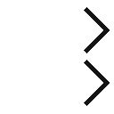

| 25歳の超おバカ女、早稲田に入る！！ | |
| 深田萌絵 | |
| (2007) | |
マガジンハウス
25 歳の超おバカ女、早稲田に入る!!
深田萌絵
「おバカ」であることにめげない私。
「モエって、ほんっとうに、バカだね」
そう言われ続けて25 年が過ぎた。
「バカオンナ」って、一貫して自分のアイデンティティーだと思って生きてきた。
小学校から短大まで、勉強という勉強はさっぱりだめだった。
自分から友達を積極的につくろうと思わなかった。
人生なんて真剣に考えたことがなくって、ただなんとなく生きてきた。
オシャレに命をかけていて、毎月、美容院に行き、髪の毛は巻き巻き。マスカラ５度塗りは常識。理想の女性像はバービー人形で、「モエちゃんってお人形みたいだね」って言われた瞬間だけ、自信が持てた。
学校を卒業して、いざ会社勤めをしてみれば、
「頭使いなさい！」
「いつでもオトコが助けてくれると思ったら大間違いよ！」
「本当にバカじゃないの!? 」
毎日、上司や先輩に怒鳴られる。だけど、そんな言葉だって、当時はまったく耳に入らなかった。笑ってごまかして過ごすのが当たり前の毎日だったから。
それでも似たようなオツムの同僚と、
「こんなに長時間働いているのに、月に20 万円いかない給料ってむなしいよね」
「私たち、どうなっちゃうの？」
そんな会話をしながら、未来に希望が描けない自分がいた。
そこで、女性がラクして歩める人生の可能性として出てきた答えが、
「もう、玉の輿を狙うしかないね！」
これは冗談じゃなくて、私たちの切実な生き方の選択肢。
バカで、大した学歴もなくて、技術も資格も持たない女がどうやってこの先、社会で生きていけばいいんだろう？
「お前みたいなバカには無理だ！」
「ええ、私、おバカですけど......。それが何か？」
いじけて過ごした25 年、開き直って過ごした25 年。
「バカオンナ」は、私のアイデンティティーです。なんせ、私のおバカは、歴史が長い。だけどね、ほんのちょっと希望と勇気を持ったら、人生が変わったの。
25 歳の夏に早稲田大学のＡＯ入試ポスターを見て、ダメもとで受験しちゃったのです。
ほんと、それってその場の勢いだった。
そして、私は、なんと幸運にもハッピーな大学生活が送れ、２００８年３月には無事（といえるかどうかわからないけど）大学を卒業し、４月からは外資系企業に就職しました。
大学で勉強してもバカは相変わらずだけど、自分の未来は少し明るくなったと感じています。
この本が、もしあなたの人生に、小さな刺激となってくれたら私は本当に嬉しいです。
小学校～高校時代『なんとなくヒッキー』
読んで納得、深田の頭の悪さ
いい大学には行きたいけれど、「頭が悪いから」とあきらめている人に朗報があるのです。私の頭の悪さを紹介しましょう。これを読んだら、どんなに頭が悪い人でも「自分は、深田萌絵よりは頭いいよな」と思うこと間違いなし。
高校２年生の秋に受けた全国模試の 偏差値は平均40 ちょっと。かすかに覚えているのは数学の試験のことで、試験用紙が配られて試験監督員の「開始」の合図を送られた後、問題を見て、何も分からないことだけがよく分かりました。でも、何もしないままでも仕方がないので最初の２問に「０」と「２」と書いてみたのを記憶しています。その答えは私の気分の結果であって、もちろん計算の結果ではない。このテストの偏差値が36 、社会は40 だったので、私は親友に電話して「私は社会が得意なんだ」と、とりあえず自慢しておきました。
足し算もロクにできないまま大人になってしまったのはなぜなんだろう。
そう思い返すと、小学校ですでに勉強についていけてなかったんですよね。
人生第一歩でつまずいて、徐々に学校から足が遠のく
小学校で体育の授業が始まった頃から、世の不公平を感じました。みんなは元気に走り回っているのに、自分は何をやってもダメ。私の背は一番小さい上に身体はガリガリ、どんなにがんばっても体力がないから跳び箱は飛べないし、逆上がりもできないまま。マラソン大会は、親たちがゴールで我が子の戻りを見守る中、全員が戻って30 分経つのに私だけ戻って来ないので、 「深田さんのお嬢ちゃんが行方不明よ！」 と学校中で大騒ぎになりました。私は真面目に走った結果、疲れ果ててしまって、走るのが歩くより遅くなっただけ。ようやくゴールした頃には、ほかの生徒は全員帰宅していました。水泳の授業では溺れてばっかり。なんて、 トホホな人生 でしょう。
運動が苦手な私は、勉強もすごく苦手。 授業中に先生の板書のスピードについていけず、 ノートを書けば先生の話は聞こえない。先生の話を聞こうと思うとノートは取れない。そんな悪循環が続き、授業にはついていけなくなって、落ちこぼれになっていました。
でも、小学校では、授業以上に辛い関門がありました。それが給食の時間。あのむせるような匂いに耐えられないのです。給食を残したかったけれど、先生の許可が得られなかったので、５時間目が始まるまで給食をつつき続けました。休み時間を友達とも遊ばずに、一人で給食と格闘している間に、気がつくと友達はほとんどいなくなっていたんです。
ま、そんなドンくさい私ですが、そのうち、 担任にストレスのはけ口 に使われるようになってしまい、自然と学校から足は遠のいちゃった。
担任教師は、授業中にパッと私のノートを見て、「こんな汚い字のノートはいらないですよね」と言って窓からノートを投げ捨てました。クラス中が笑って楽しそうだったので、その場は私も一緒に笑ったんですが、家に帰ってから「明日もこんなんだったら、学校に行きたくないな」って、なんとなく思ったんです。どうすれば、学校に行かなくてもすむのかなと考えてみたけれど、クラスでそんなことがあったから学校に行きたくないなんて親には言えなかったので、とりあえず「頭が痛いから、学校に行けない」と言ってみました。そしたら、簡単に休ませてもらえたので、「なんだ、こんなことで学校を休めるんだ」と、学習しました。流行に敏感な私は、「不登校」という言葉が生まれる前から 流行先取りで「不登校」を始めていた のです。
その後ニートになった私って、ファッション・リーダーならぬ、社会現象リーダーだったのね！
小学校の延長線上で、中学１年では、先生とそりが合わなくて、学校に行かない日が２カ月続きました。「今日は学校どうするの？」という母の言葉に、悪いなと思いつつ「今日は学校に行きません」と答えていました。母は、それ以上何も聞かない人で、雰囲気で「学校で何かあったんだな」と理解してくれていたので、とても感謝しています。もちろん、学校側には、「深田は病気です」と伝えて休むんだけれど、本当はすっごく元気。だからといって、外出して遊びにいく勇気もなかったので、 家でひたすら漫画を読んだりゲームをしたり して過ごしました。これが今をときめく「引きこもり」の先駆けで、これもまた私が流行に敏感だった証拠だと思います。 １日に16 時間ゲーム をしていたので、長編ロールプレイング・ゲームの『ドラゴンクエストⅢ 』を５日でクリア。『ドラクエ』をクリアすると、今度は『ファイナルファンタジー』をひたすらやっていました。
『ドラクエ』、『ＦＦ』、『ポートピア連続殺人事件』などのゲームをクリアして、やりたいゲームがなくなった頃、兄も不登校を始め、ついでに家庭内暴力も始めたので、「こりゃ家にいるとヤバイ！」と命の危険を感じて、中学校にはまたなんとなく行き始めました。というわけで、中学１年生の６月頃から出席率が上がったのは、そんな兄のおかげです（笑）。
学校に行き始めたのはよかったんだけれど、すっかり昼夜逆転の生活に慣れていたので、１日中眠くて授業中はずっと机に伏せたまま。 先生が「集中しろ！」と声を張り上げるたびに、私の集中力は加速度的に低下。 授業がつまらなくて集中力を維持することはほぼ不可能でした。おかげで三者面談のときに担任の先生が「女の子なのに授業に集中せず、落書きばかりしている。背筋もしゃんとしていない。ぼーっとして授業も聞いていない、僕の話も聞いていない、成績は最低レベルで学習障害かと思ってしまいますね。将来どうするんですか？」とすごみました。そんなことを言われた母はしょげ返るかと思えば、深田家伝家の宝刀「逆ギレ」を振りかざし、「先生の授業に、子供が興味を持てるような工夫がないからじゃないんですか？ 先生の教育が悪いんでしょ！」と自分の教育は棚に上げて言い返しました。私は驚きながらも、心の中で「ほかの子はいい成績を取っているから、先生に罪はないよママ！」と思いましたが、気が弱かったので口には出せませんでした。
帰り道、母が「どうして先生の話を聞かないの？」と私に聞きました。そんなことを言われても、教室にたくさんの生徒が座っていて、その中で先生が私に話しかけているなんて、気がつかなかったのです。
私が、「先生の話を聞いても、先生が何を言っているのか分からないの」と答えると、母が「先生の話なんて、真面目に聞いちゃダメ！ 本当は誰も聞いてないのよ。聞いてるフリだけしておきなさい」と私を諭しました。
この世のどこに自分の子供に向かって、人の話を聞くフリをしろと教える親がいるのか知りたいと思いましたが、「聞いてるフリってどうするの？」と母に聞くと、 「先生が喋っている間は、何を言われようと目を見て頷くのよ」 と彼女は答え、実演しました。
これが母に教わった最初の処世術です。母から教わったことで、直接人生の役に立ったのは数少ないけれど、これ以降、先生とのコミュニケーションは多少なりとも改善しました。だけど、先生たちの話を聞いていないことには変わりなかったので、成績は悪いままでした。
高校のあだ名は「丘の上のキャバクラ」。私たち、キャバクラ嬢ですかぁ？
高校は、中学校の人たちに会いたくなかったので、校区の誰も行かないような片道一時間かかる女子高に通うことにしました。４０４人が受験して、合格発表を見に行くと「合格者４００人」と墨で書かれた白い旗に桜の模様があったのを今でも覚えています。そのとき自分が合格したことも確認しましたが、 テストの答案用紙に何かを書き込んだ記憶はほとんどなかった にも関わらず見事に合格していたんです。合格発表を一緒に見た友達が「残りの４人は、どうやって落ちたの!? 」と驚いていました。私も知りたいです。
私が通った女子高はすごいです。 なにがすごいかというと、女子高を取り巻く環境、の一言に尽きます。あまりお勉強は得意ではないけれど、性格のよい可愛いらしい女の子たちが通っていました。そんな女子高が何を間違ったか、寺と墓地とラブホテル街の合間に立地しているのだからアブないといったらありゃしない。当時ブルセラ全盛期だったので、登下校の際には不審な車に「お姉ちゃん、ちょっとお小遣い欲しくない？」と言って車に追い回されることもよくあることでしたね。
就職したときに、「深田さんって、そういえばどこの高校出たの？」と聞かれたことがあって、うちの女子高の名前を出すと、「ああ、丘の上のキャバクラね」と言われたことがあります。頭の悪い女が行く学校という意味でしょうが、好意的に受け止めてキャバクラ嬢くらい可愛い女の子が多いねっていう意味に解釈しています。
高校時代は、またしても悪い成績でした。 １年生の１学期目の中間テストで赤点が二つ。 「こんな成績で入れる大学なんかないわよ!! 」と、担任の先生はカンカン。母までが「なぜ、あなたはそんなにバカなの!? ママはすっごく頭がよかったのよ！」と 驚愕 していました。なぜって言われても困るけど、理由があるとしたら思い当たるふしはありました。
「授業で先生の話を聞いても、まったく理解できないの」
と、正直に答えました。授業中に先生が唱えている言葉が、当時の私には日本語には聞こえなかったからです。
そう答えると、
「あなた、バカじゃない？ 先生の話を聞いて分かるわけないじゃない！」
と母が言うので、
「じゃあ、どうやったらいい点が取れるの？」
と聞きました。
「教科書を読めば、答えが全部書いているでしょ」
母の答えに、私はびっくりしました。
今までにちゃんと教科書を読んだことがなかったから。それどころか、学校で配られている 教科書を本当に読んでいる人がこの世にいることと、そんな生徒が大半であることを知らなかったんです。
「こんな成績じゃ２年生になれないですよ」という先生の言葉に、このままでは「娘の人生が危うい」と母は焦って、私を有名塾に入れようとしました。それで、入塾するために試験を受けたんですが、結果は不合格。
「モエちゃん！ あなた、塾にすら入れなかったのよ......」 と母は嘆いていました。
でも、うちの学校で頭が悪いなんて私だけじゃありません。義務教育より先、生徒の脳みそイコール学校のレベルといって過言ではありません。
例えば、英語のテストで、「『にわとり』という単語を英訳せよ」という問題がありました。
「にわとりって、英語で何て言うんだっけ？」と誰かが言い出し、 「え、ガーデンバードでしょ？」 と、さも当然のように誰かが言い返したんです。
「あ、そうだった！ にわとりって、ガーデンバードだよねー！ なんかど忘れしちゃったよー」
と、クラスが盛り上がっていました。
あ、私は、にわとりが「チキン」だと知っていますよ。だって、ケンタッキーは「フライド・チキン」であって、「フライド・ガーデンバード」ではないからです。意外と私、賢いでしょ？
高校３年生の受験シーズンともなると、毎週月曜日に行われる朝礼で、校長からの挨拶は週ごとに声のトーンが下がっていきました。朝礼台に立つ校長先生の姿が憂いを帯びている。何かあったのだろうか、などと気にかける女子高生など皆無でしょうが、彼は口火を切りました。
「みなさん！ 受験シーズンとなり、早い人はもうテストが終わりました。僕は一昨日、偶然にもあなたたちの何人かが受けた大学の先生に会って、『うちの生徒をよろしくお願い致します』と頭を下げました。すると、彼はなんと言ったと思いますか？」
校長先生の投げかけに、「そんなこと、どうでもいいよ」と生徒は沈黙で返しました。
しーんと重たい空気を押しのけるように、校長は思い余ったように口を開き、
「その先生は、僕を見て『お願いしますと申されましても、貴校の生徒さん、源氏物語の作者を〟 光源氏〟 と答えた人が何人いると思っているんですか？』と声を震わせました。僕は、『すみませんでした』とただ頭を下げてその場を去りました。みなさん！ 彼が『光源氏って答えた人が何人いるんですか』と言ったということは、答案にそう書いたのは一人や二人じゃないということなんです。あなたたちは本校の生徒として恥ずかしいと思わないんですか!! 」
と、校長先生は目を真っ赤にして、震えていました。私も多少は「校長先生、真面目な人なのにかわいそう」と思ったのですが、その朝礼が終わった後、 「えー？ 源氏物語って光源氏が書いたんじゃなかったの？」 という声がどこからともなく聞こえてきました（正解は紫式部です）。
そんな感じの学校で、頭が悪くとも明るい女子高生のクラスメイトに恵まれていました。私は、中学で引きこもったり、先生に怒られたりと親を心配させたはずのネクラな子供なんだけど、母はほとんど動じませんでした。母は、自分の教育が神より正しく、うちの子がちょこっと落ちこぼれているのは学校の先生が間違っているからだ、と固く信じていたのです。その思い込みの結果、彼女が我が子の出来が悪いことに不平を言ったことは一度もありませんでした。 自分に自信のない人は、うちの母の根拠レスな自信の持ち方を学ぶべきだ と思うぐらいです。
母は、私の出来の悪さは学校に責任があると信じているけど、私が今更ながら思うには、学校にさほどの罪はなかった気がします。ただ、気丈な母も動揺したことがありました。高校２年生のときに 修学旅行に行くのを忘れてしまった のです。
ある日曜日の朝、学校からの連絡を受けた母がドンドンドンと階段を駆け上がって、バーンと私の部屋のドアを開けて、叫びました。
「モエちゃん！ 今日、修学旅行だったんだって!! 」
その後、あまりの娘の情けなさに泣き崩れたのたのでした。不登校で、引きこもって漫画ばかり読んで、学校で赤点ばっかり取っているだけならまだしも、楽しみにしていた修学旅行まで行くのを忘れる我が娘のおバカっぷりに、ついに涙を流し始めました。私が知る限り最初で最後の、母の涙でした。普段なら「仕方ないね」と言ってサボるところでしたが、母の涙に驚いて、慌てて飛行機で修学旅行のみんなを追いかけました。
それ以降、母は、父が失踪しようが、借金のカタに持ち家が奪われようが、涙を見せたことは二度とありません。そのくらい母は気丈な人なのですが、それを上回るくらい私は情けない人間なのでした。ごめんね、ダメ娘で......。
「短大に行け」と言われてもこの成績......
大学に行く気はなかったから、勉強もせずにだらだらと高校時代を過ごしていたある日。突然、母が 「高卒は恥ずかしいから、せめて短大に行って」 と言い出したんです。母は高卒で大阪万博のコンパニオンになったのですが、万博が終わって社会に出ようとしたときに、大学を出ていないことを指摘されて、ずっと恥ずかしく思っていたそうです。
しかし、母が進学してほしいと願っていたのを知ったのは、高校３年の夏。
時すでに遅しです。そのとき、私の英・国・社の平均偏差値でいけるまともな大学は皆無に等しかったのです。「もっと早く言ってよ！ 手遅れだよ！」と娘ながらに思ったので、もしこれを読んでいる人が高校生なら、両親が自分の将来をどう思っているかを早い段階で確認しておいてくださいね。
「自分の人生なんだから、自分で決めなさい」と寛大な言葉をかけていても、それは寛大さではなく、単なる無策だったりもします。間際になって、「どうして勉強してなかったの!? 」なんて唐突に言い出すかもしれないですから（うちの母だけか？）。
「大学に行ってほしい」と母にお願いされたちょうどその頃、親友が 「モエと一緒に美術の短大に行きたい」 と言い出しました。両親や私にとって「短大は娘を遊びに行かせるようなところ」という認識。それで、お金の無駄だと思って、「イヤだよ」って断ると友達が泣き出してしまったんです。泣くだけならかまわないけれど、 「どうして、一緒に行かないの！」と怒り狂って暴れ出してしまいました。
目の前で壁にぼこっと穴が開き、親友が本棚を揺さぶっている姿を見ながら、ふと考えました。
父の描く私の人生は、私が高校か短大を卒業した後は、父の会社を継がせるために私を自分の会社に入れて、どこかのボンボンとお見合い結婚をさせるというものです。短大を卒業するまでが、人生最後の自由な時間なら、自分のために泣く親友に２年くらい捧げても構わないんじゃないかなと、私は考えました。それなら、その短大を受験してみて、落ちたら父の元で修行をしようと決めたんです。高3 の夏からデッサンを始めて、 なぜか美術短大に受かったので、目指してもいなかった芸術への道を歩み始めました。
短大時代『芸術は爆発だ!? 』
バカに拍車がかかる短大
なんだかんだで入った短大の学費は年間１３０万円（10 年以上前でこの額!! ）。ギョッとするようなお値段です。最近では、私立大学の学費が年間80 万円で高い、と騒いでいる人もいるようですが、私に言わせると安い。安すぎる。私の卒業した短大は、年間１３０万の学費に加えて、企業から 就職試験の応募すら拒否される ような踏んだり蹴ったりの学校でした。学費問題なんか吹き飛んでしまいます。どの大学の看板を背負うかで生涯賃金が違ってくるくらいだから、それと比べたら有名私立大学の学費は、はっきり言って安いくらいでしょう。
私が短大を卒業し、社会に出て最初に驚いたことは、 「きみの短大の子を採用しないことにしてるんだよね。アタマが痛いから」 と面と向かって言われたことなんです。でも、確かに私の短大を出た人間は、頭が痛い人が多い。中にはお手製のセーラー服で短大に来る人や、シルクハットにマントの人もいました。
そんな短大を出た私は、就職した年に会社の車を潰すわ、契約書をカッターで切るわ、１年も通い続けた会社に、ある日突然道に迷って辿り着けなかったりと、 とんでもないバカッぷりを発揮 しました。物事をテキパキとこなせない、トンチンカンなことをしてしまうのは、短大で常識を身につけられなかったことに起因している気がします（に、違いない。個人の資質とは思いたくないだけかもしれない）。
私の出た短大は自由で、「個性的であれ！」という校風の中、奇抜であることがよいとされていました。そして短大では、こぞって「我こそは個性的」と奇抜さを競うんですが、一般社会では奇抜であっていいことなんてないんですよね。
短大の授業の内容はというと、英会話が「How are you?」から始まって「Where are you?」くらいまででおしまい。たぶん、レベルとしては中学校を卒業できないくらい。早稲田に入って最初に驚いたのが、最初の英語の講義に、何枚にもわたる英文を「読んできてください」と突きつけられたときです。短大のときに１行以上の英語なんて見たことがなかったので、「自分が思っていた大学の講義とは違う！」というのが正直な思いでした。人間は物事を自分のレベルでしか考えられない動物なのです。
さて、短大での一般教養の講義には、 ひたすら教授の独り言を聞き続ける ものもありました。
「モチーフが、僕に語りかけてくるんです。壁が、水道の蛇口が、『私を赤色に塗って、水色に塗って』と、暗闇の中から呼びかけてくるんです......ホッホッホ」
と、笑いながらパイプをくわえる教授に、学生は全員目が点。
そんな芸術教授がいるかと思えば、デザインのクラスでは、
「僕という人間はここに一人しかいない、ということは日本に一人しかいない、ということは、僕は世界にたった一人しかいないスッゴイ天才なんだ!! 」
という乱暴な三段論法を振りかざす教授もいました。こんな強烈な講師陣の講義を受け続けたので、すっかり脳みそが洗われてしまったのです。ひょっとしたら、高校までに身につけた最低限の常識と知性までも、短大の２年間で失ってしまったのかもしれません。
暗室で貞操の危機!!
クラスメイトはというと、 とにかくちょっとヤバイ 。個性的っていうか、個性で許される範囲を超えている。教室には、トルエンに石油溶剤に油絵という可燃物が多々ある中で、タバコをぷかぷか吸う人もいて、いつ教室が爆発するか、またクラスメイトがラリッてしまうか気が気ではありませんでした。
しかも、雑然とした教室は、ゴミと作品の区別が付かないので片付けられない。何かが燃え始めたら、すぐに勢いよく燃え移ってしまいそうな空間です。しかも、冬は閉め切って有機溶剤を使いまくるので、脳みそがどうにかなってしまいそう。いや、 もうその時、既に脳みそが溶けてしまっていたのかもしれません。
そんな中でも、私は真面目に制作をしようと、ある日、写真の現像をするために暗室に入ろうとしました。すると、暗室の前に座ってタバコをふかしているクラスの女ボスに、 「あ、深田さん。今、中でセッ○ スしてるからちょっと待ってて」 と、暗室の入り口で止められてしまいました。暗室では、中で何が行われているかなんて、外からはまったく分からないのです。
「ええ！ セ、セ......、あ、そうなんですか？ すみません......」と謝りつつ、暗室の前で女ボスの肩を揉みながら（私は強い人間には媚びへつらう性格なのです）しばらく待ちました。ようやく、中からクラスメイトの男女がスッキリした顔で出てきました。
「じゃあ、暗室お借りします」と、ヘコヘコしながら暗室に入ろうとすると、「あ、深田さん。私、処女ってムカつくんだよね」と女ボスに引き止められる私。
「えぇ！ そうなんですか、すみません」と謝りながら逃げるように暗室に入ろうとすると、女ボスは暗室から出てきた男の子に向かって、なんと 「深田さん処女だからやってあげて！」 と言ったのでした。そのときはさすがに「げ、ヤバい！」と冷や汗が出ました。でも、彼は「えー、今日はもう無理」と言ったので、私の貞操はかろうじて守られました。もう少しで私の清らかさは、短大の暗室という訳の分からないところで失われてしまうところでした。
またある日は、突然クラスメイトが教室に駆け込んできて、「先生、大変！ △△ 君が作品用の撮影でビルの屋上をフル○ ンで走りってたら警備員に捕まりました！ 警察に突き出される前に、迎えに行ってくださーい」と助けを求めていました。
世間や後先を 顧 みない果敢な芸術家を輩出することにかけては、これ以上の場はないだろうという短大だった、かもしれません。
人生で人格を形成する大切な時期に、個性的すぎる大学に入って影響を受けてしまうと、後々の人生に差し障りがあるので気をつけたほうがよいでしょう。
周囲の存在は、自分がどういう人間になるのかを左右します。そんな短大を出た私はその後の人生で、相当変人扱いされましたが、それも仕方ないのかもしれません。
社会人時代『それいけ、バカＯＬ! 』
父さん、倒産しちゃったよ
「金は天下の回り物。就職なんか考えなくていいよ。女の子なんだから、短大を出たらボンボンと結婚させたるから」
そう育てられた20 年を経て、突然父の会社が倒産し、行方不明になりました。さすが、私の父さん！ 男らしさを感じさせるほどの無責任ぶりです。その結果、ある日、業者がやって来て自宅を追い出されました。自宅が借金のカタに取られ、家が他人の物になったのです。
母と私と高校生だった妹は住むところがなくなってしまいました。荷物を処分して、まるで夜逃げをするように安アパートに移り住むことに。本当に取る物もとりあえずという感じで荷物をまとめたので、引越しが終わってみると大切な荷物がたくさんなくなっていました。だから、今の私の部屋には思い出の品というものはほとんどありません。
たった一つ、子供の頃から使っていた木馬だけが残っているだけで、「アルバムとか取っとけばよかったな」って、今でもよく思います。
みなさん、物は大事にしましょうね。
そして、「父さん、どこに行ったんだろう......」なんて感傷に浸る間もなく、 「お金がナーイ！」という人生が始まりました。 人生初めての貧乏という現実に、慌てて就職活動を始めたんです。
でも、その頃と言ったら、ツンドラよりも寒い就職氷河期。寒いというよりも、景気は南氷洋のようでした。おかげで、就職先が見つかるまで、何社も回る羽目になったんです。「何十社の間違いでしょう？」と思われるかもしれませんね。実は、その時期は何通履歴書を送っても何の返事もなかったのです。なぜ、返事がないのかと疑問に感じていたのですが、自分は郵便運が悪いので、郵便物が届いていないに違いないと思って自分を納得させていたんです。
ところがその頃、別の大学の友人に「面接ってどんな感じだったの？」って話を聞くと、「面接会場でいろいろな子たちと情報交換したけれど、その場にいたのは関関同立と阪大・京大の子だけだったよ」と聞いてショックを受けました。短大卒だから仕事がないのはしょうがないと思ったけれど、「関関同立と阪大京大以上」なんて募集要項にはどこにも書いていないのに、 学歴で足切りをしている社会の現実 を、それまでまったく知らなかったんです。だって、小学校の先生は「人間は学歴じゃない」って言っていましたし。でも、そんなことを真に受けていたのは自分くらいで、ほかの人たちは、思い返すと真面目に勉強していました。
あれから何年も経った今でも「学歴社会」という状況は、まったく変わっていないみたいです。
年収１５０万円時代到来！ マジで貧乏だぞ！
かの山一証券がつぶれた翌98 年が、私の初就職の年。本当に不況の真っ最中でなんとかある会社に就職したものの、初めてのＯＬ生活には本当に戸惑いました。お局様には、「深田さん！ あなた、ちょっと常識ないんじゃないの!? 」
なんて、怒鳴られることはしょっちゅう。上司や先輩が忙しそうに仕事をしている姿を、ただ見ているだけで何もしない私に、周囲はいらついていました。そう言われるのも仕方がありません。なにせ、私、父親の会社でしかアルバイトをしたことがないんです。実はそれすら失敗の多い私には何もさせないという周囲の隠れた努力があったので、私はただ会社にいるだけ。お茶汲みすらやったことがなかったという始末。
あまりにも何もできない20 歳に周囲は驚いていました。 まず、お客様が来ても、お茶を出さないので、先輩は怒る、怒る。
「なぜ、お客様にお茶を出さないの!? 」
「だ、だって、お茶を出しなさいって言われなかったので......」
「お客様が来たらお茶を出すのが当たり前でしょ！」
「それって、当たり前なんですか？」
「あんた、バカ？」
という感じです。割った茶碗の数は社内の新記録を打ち立てました。アイム・ザ・チャンピオン！
また、ある日、封筒の宛名書きをしていると突然、バーンと机を叩かれ、
「深田さん！ 株武 会社って何!! 」
と、大量に書き間違えた封筒を抱えたお局様が青筋を立てて怒鳴り込んできました。
その場は「すみません、うっかりしていました」と答えましたが、内心では「武と式なんて、そんなに違わないだろう！」と思っていました。
それに、伝票１枚あたり３回は書き損ねるので、５枚書くのに２時間はかかってしまう私に、
「伝票１枚書くのに、あなた何時間かかってるの！」
と、血管切れまくりのお局様の形相はすでにこの世のものとは思えないもの。そんな状況にすっかり怯えきる私。それを見ていた社長が、
「まあまあ、わざとじゃないんだからね。でも、深田君もいけないんだよ。伝票の紙がもったいないから注意して書かないと。地球に優しくね」
と、その場に入ってくれて、私はクビにはならなかったのです。
あ、私の頭が特別悪いわけじゃないですよ。うちの短大を出ている人なら、二人に一人はやってくれちゃうミスです。友人たちの武勇伝を挙げると、ある人はバイト先で１日に７枚の皿を割ってクビ。ある人は仕事でお遣いに行って、道に迷って帰って来れなくなり、地図を買って帰ったそうです。就職試験の面接のときに特技を聞かれた人は、十八番のビジュアル系バンドの歌を熱唱し、「この子は、ほかの会社に行くと危ないかも」という配慮から採用になりました。また、ある人は得意先への常務への手紙に「○○ 上ムさま」と書いて、いじめ抜かれて自主退社。バカＯＬは別に私だけじゃないんだもん。
とまあ、私も他のバカＯＬが経験するそんな苦労を乗り越えて、「ご苦労さん」の言葉とともに渡された薄っぺらい茶封筒。開けてビックリ、 手取りで12 万５０００円ポッキリ です。これが私の初任給でした。 「そんなバカな！ どうやって生活するんだ？」 と思う人がいるかもしれませんが、これが社会の現実です。私も正直言って 「これはヤバイ！」 と思いました。ここから母と妹と住むアパートの家賃と光熱費を払ったら、カツカツの生活です。これでは貯金もできないと思ったので、土日もアルバイトをして、とにかくお金を貯めたんです。でも、お金が貯まった頃には、「このわずかなお金で遊んだら、本当に未来がない！ いい給料もらうために、何でもいいから勉強しないと」って考え始めたんです。
このままＯＬを続けても月収20 万円を超えるのに何年かかるか分からない。そう思ったのが21 歳のときで、何か資格を取ろうと、英語の勉強を始めたんです。一大決心ですが、なぜ英語の勉強なのかは自分自身大して考えてはいませんでした。この世に役立つ資格にどんな種類があるのか誰も教えてくれなかったので、一番ハードルが高い語学を選んでしまったのが失敗の元。今なら手に職をつけて食べていくのに、間違っても語学なんかは選びません。
そこで、とにかく英語を習おうと思って雑誌の『ケイコとマナブ』を買って来ると、巻頭でケンダマ特集をやっていたんです。何だか面白そうだったので、ケンダマを習ってケンダマ検定を受けたら8 級でした。つまり、下手だったんです。
それで、「あ、そうだ。英語を習おうと思っていたんだ」と我に返って、ようやく英会話教室の生徒になりました。
英語の勉強を始めてからの一番の苦痛は、英語の先生が必ず根掘り葉掘り家族のことを聞いてくることでした。私の家庭の事情を聞いて、聞かなきゃよかったと思う人が多いのは理解していたけれど、質問には答えなければという強迫観念があったので、一つ一つ真面目に答えていました。「お父さんは何をしていますか？」と聞かれると、「そんなこと私が知りたいやい！」と思いました。失踪してるんだもん、家族捨てて。
仕方がないので、
「He went bankrupt He has been missing since 1998. He might have been chased by banker and running away in this moment.（ 彼は会社が倒産して、１９９８年から行方不明です。恐らく現在は銀行に追われて逃げているのでしょう ）
と正直に答えると、金髪の先生は戸惑っていました。私としても、あまり立ち入った話を聞かれても気まずいので、しつこく聞かないでほしかったんですが、根が正直者な私はそう答える以外に気の利いた返事を見つけられなかったのです。
「じゃあ、兄弟と暮らしているんですか？」と先生が追い討ちをかけるので、また困りました。兄は、父が失踪する少し前くらいに、両親に反抗して家を出てしまい、これまた居どころがよく分からなかったからです。
「My brother left home 4years ago. I have not seen and heard from him since then. I don't know where he lives. My mother has been waiting for him.（兄も家を出て行きました。もう４年は会っていないし連絡も取れません。どこにいるのかも分かりません。母は兄を待っています）」
と答えると先生は「Oh...」とこの世の終わりのように眉をひそめ、外国人らしい反応を見せてくれましたが、そんな反応をするのだったら最初から他人の家庭のことを根掘り葉掘り聞かないほうがいいのではないか、と思いました。私だって、返答に困っていたんですから。
ちなみに、父が失踪したり、家を取られて、すべてを失ったりしたことに対して、母と妹はストレスを感じていたようだったけれど、私はあまり何とも思っていなかったんです。家族がばらばらになるなんて小説にはよくある話で、現実にありえない話でもないし、その状況にリアルな悲壮さをあまり感じていなかったから。
中小企業の給料は上がらない
ＯＬ２年目になろうとしているある日のこと、会社の人たちの給与明細を用意しているときに、私の人生を左右する重大な事件がありました。「ふ、か、だ、さ～ん。何をやってるんですかぁ？」と言っては、私を教育する（いじめる？）30 歳近いお局様のヒミツを知ってしまったんです。
伝票の整理をしていたそのとき、彼女の給与明細がデスクに置いてありました。
「あの人って、自信満々に人をいじめるんだから、よっぽど給料もらってるんだろうな」
と、ムラムラ。
「見ちゃいけないけど......う～ん。見ーちゃおう♪ 」
そして、封筒の中身をチラッと見ると、手取りが「22 万円」。
「えー!! マジ!? 30 歳になって給料22 万円しかなくて、男もいないお局様みたいになったら超不幸!! 」
と、そのとき真剣に思いました。
そういえば、中谷彰宏さんの本に「自分の将来の姿は、会社の先輩の姿を見れば分かる」と書いてあったことを思い出して、チラリと彼女の顔を見ました。
肌荒れに、吹き出物、目の下のクマ、しかも厚化粧で隠しきれてない！
「うっわー......。30 歳でお肌ボロボロになるまで働かされて、ヒステリーで、この給料なんて、夢がなさすぎる！ こんなことをやっていたら私の将来が危うい！」
と、お局様に失礼なことを考えたときは、21 歳で、何となく始めた英会話を真剣にやらないと、月収30 万円になるのに何年かかるか分からないって焦りが出ました。
「私が33 歳になったら、母親は60 歳で働けない。22 万円でどうやって母と自分の生活支えるの？ 国が何かしてくれるの？」
と、とにかく不安になったんです。現に母の国民年金を計算してみたら、彼女が65 歳になってから、月に5 万円くらいしか支払われないことが判明。12 年後を想像してみても、自分の給料は20 万円そこそこ。母の年金を合わせても30 万円に達しないんです。
これって、「夢も希望も持てん！」な状態だと思いませんか？
ＯＬとして将来が見えないという壁にぶち当たると、一生懸命に勉強をしようと思うのが普通だけれど、そこで私が始めたのはおしゃれの研究です。
女らしくなりたいって思ったのは、お局様のヒミツを知ってしまったことと重なるようにして、トイレ事件があったからなんです。ある日、トイレに入っていると、お化粧直しをしている同僚の声が聞こえてきたんです。
「深田さんってさ～。『私、男の人、苦手なんです！』みたいな処女ぶりっ子いつまでやる気かな～？」
「えー？ あれって、彼女の売りなんでしょ？」
「本当にダッサーイ！ キャハハ」
ガーン。そういう目で見られていたのか。頭を打たれるようなショックでした。
それで、英語の勉強が上達しなくても、お金持ちと結婚すればどうにかなるからと思って一生懸命にお化粧を始めました。その頃、知り合った友達と玉の輿競争が始まったのも一因。それまで、特に男の子とつき合いたいっていう願望はなかったんだけど、 「とにかくキレイになって、王子様見つけなきゃ！ お局はヤバイ！」 という焦りがあったんです。それからは、雑誌の読者モデルをやっている友達にメークを教えてもらい、補正下着を買い、とにかく女らしくなろうと努力しました。ま、そんな状態でがんばったからって、恋愛がうまくいくはずもなく、何人紹介してもらってもぜんぜんダメでしたけど（笑）。
結局「やっぱ玉の輿よりも自分の努力だよね」という結論に達して、何か自力でできることを再び探し始めました。
ちょうどその頃、がんばって貯めた貯金が２００万円くらいになっていて、「留学でもしたいな」という気分になったんです。それというのは、その頃って「自分探しの旅」という言葉が大流行。海外に語学留学をする人が多かったんですね。会社にいても未来がないのは分かっている。そこで、「外国に行って英語ペラペラになって帰って来るぞ！」と外国へ行くことを決意しました。でも、１年間行けるほどの貯金はなかったので、50 万円の予算で収まる２カ月のコースを選びました。
短期留学すら、超短期で挫折
カナダへ２カ月の短期留学。バンフ国立公園のある美しい小さな街で、温かいホストファミリーと暮らしながら語学を身につける予定でした。
ところが、蓋を開けてみると、バンフの語学学校は過疎化が進み、クラスは初級と中級の二つ。そのレベルの差は極端で、中学１年生と高校２年生くらいだったんです。最初の初級クラスでは、クラスメイトの広島県民に広島弁を伝授されて、英語よりも広島弁が堪能になりました。初級クラスは、本当に英語のできない人たちの集まりでした。その中で一番仲良くなったのは、バービー人形を集めるのが好きな23 歳の日本人男性。そんな彼は元調理師で、バーベキューの天才だったので一言も英語を話さないのに、誰からも好かれていました。彼は、イタリア系移民のホストファミリーの家庭で牧場を手伝ったり料理をしたりと、その才能をこれでもかというくらいに発揮。そのうちに、ホストファーザーは、彼を日本に帰したくないと言い始め、逆に日本語を学び始めたのです。そんなバービー人形収集家の彼が羨ましいと思いました。
周囲に認められる技術があれば、本人が英語を勉強しなくても、周りの人が一生懸命に日本語を理解しようと努力してくれるのです。本当に、何かに秀でているってうらやましい。
私はといえば、複雑な家庭事情のホストファミリーの家に滞在していました。離婚家庭で、週に何度かお父さんがやって来るのだけれど、何を喋っていいのかよく分かりませんでした。かつ、毎日出てくるホストマザーのハイテク料理に嫌気がさしていました。彼女はいつも夕方になると、 「ハイ、モエ、今夜はチキン？ ビーフ？ フィッシュ？ ピッツァ？」 とバラエティーに富んだディナーを提案してくれます。
問題はこの後で、 どう答えようと、冷凍庫から冷凍食品の箱が出てきて、チーン！ 電子レンジの音とともに紙箱ごとテーブルに並べられるんです。サラダは、バリバリっとビニールを破いて中身をサササッと皿に盛り、ドレッシングを振って、「ハイ、サラダの出来上がりよ～♪ 」といった調子でした。
私はジャンクフードが苦手なので、これには本当に参りました。しかも、レンジでチン料理は身体によくないからって大量にサプリメントも飲まされるんです（笑）。だったら、料理すればいいのにね。漫画『美味しんぼ』で、妻が毎日電子レンジ料理を出していたら新婚の夫が帰って来なくなった話があったけど、確かにこれはツライ。
語学学校は、入学２週目で中級クラスになり、基本的にお調子者な性格の私は 「私って天才かも!? 」 って勘違いして舞い上がってました。でも、そんな気分は一瞬で吹っ飛びました。レベルが高すぎたんです。
先生の英語がぜんぜん聞こえてこない。だからといって、初級クラスに戻っても勉強にはならない、でも学校にはこの二つのクラスしかないので選択肢はない。学校でナーバスになり、ホストファミリーとの会話にも煮詰まって、余計にストレスを感じました。家に帰るとホストマザーは、「How is it today?」と、毎日必ず聞いてくれます。だけど、「今日どうだった？」と聞かれても、彼女は私が学校に行ったということを知っているはずなので、何を聞いているのか分からずに困惑してしまうのです。「なぜ、彼女は知っていることを毎日聞くのだ？ どうして毎日、『今日はどうだった？』と聞くのだ？」と思い悩みながら、「今日は、学校に行きました。お弁当を食べました。その後、美術館に行って、本屋に行って、その後宿題をしていました」と、毎日同じような返事をしていました。そう答えると、彼女は目が点になるので、余計に悩んだのですが、今から思い返すと、「How is it today?」ってただの挨拶なので、「It's fine!」って言えば、悩まない話だったのです。
ホストファミリーとの会話、学校のレベルと自分のギャップに悩んだ末に出した答えは、「ここにいても自分のためにならないからやめよう」でした。 ２カ月勉強する予定だったけれど、２週目で終了。 そして、旅に出ようと思ったんです。
旅に出るバスに乗りながら、私は自分でも情けなくなりました。短期留学ならできると思ったのに、２カ月すらこなせない自分は筋金入りのダメ人間だなあと。
「でも、旅行は楽しいから、まあいいか！」ということにしておきました。
その後も、ちょっとお金を貯めては海外、海外に行ってお金がなくなったらまた日本に戻って来てバイトをして貯金という日々で、２年弱が過ぎてしまいました。
そして、英語力がどうなったかというと......。
英語力はついた!? いざ入社試験！
こうして勉強しているうちに、英語がようやく社会資格だと認められるギリギリのライン、ＴＯＥＩＣ６５０点になりました。その頃、フィギュアが好きで友達と一緒に集めていたのですが、それを作っているＯＥＭ商社が儲かっているという噂を友達から聞いたんです。それで、「北斗の拳の人形とか作ってるあの会社？ 働きたい！」と言ったら、「あ、社長が知り合いだから、今度紹介するよ」と友達。それで、その会社の社長を紹介してもらい、「あなたの会社に入りたいんです」とラブコールを送りました。すると、「今、人は募集していないけれど、ＴＯＥＩＣが６５０点あるなら応募してきていいよ。でも、一応入社試験はあるからね」と社長は応えてくれました。
「やった！ 嬉しい！」と、そのときは大喜びでした。
入社試験では、英文和訳と日本語英訳の試験があり、その内容のシリアスな難しさにびっくり！
テストを始めたときに、雑誌の記事どおりの不幸が我が身にも起こっているんだということに気がつきました。その記事の内容は、日本の不景気のために ワーキングホリデーなどを利用して、海外でウエイターのバイトなどをして語学学校に通っても企業が求める英語力は身につけられず、歳だけ取ってしまう、 というもの。
そういえば、今まで外国で英語の授業を受けていたけれど、日本語を英語に訳したり、英語を和訳したりすることってなかったな、とそのときに思ったんです。ついでにＴＯＥＩＣの点数のことが頭に浮かびました。確かに合計６５０点だったけれど、内訳はリスニングが４５０点でリーディングが２００点。リーディングが２００点なら、私の英文解釈力は高校生以下のレベル。しかも、ＴＯＥＩＣの試験はマークシートで、文章を訳するという作業はない。和訳なんかしたこともありません。そう、試験の最中に、自分は今までカンで英語を喋っていて、きちんと英訳や和訳の勉強をしたことがないって気づいたんです。
要するに、何も英語の勉強ができていなかった。そんな基本的な事実をその試験で初めて理解しました。が、ときはすでに遅く、テスト終了の時間が来て、ほぼ真っ白な解答欄。「これは......ヤバイ」と思いました。はい。
当然のことながら、その入社試験には見事に落ちました。
翌日にはその会社からお断りの連絡が入って、その後１時間ほど考え込んだんです。
「私、人生をどうしたらいいんだろう」
そのとき、すでに24 歳で、「目の下に細かい皺もできちゃったし、英語もできないまま。しかも、英語を喋れる人なんて、世の中に掃いて捨てるほどいるのに、このまま英語の勉強なんか続けていけないよ!! 」って。この世にたくさん英語ができる人がいる中で、バカな自分が英語を勉強し始めたということ自体がバカな話だと思いました。物価の高いアメリカやヨーロッパに留学ができるほどのお金もありませんでした。そこで、考えた結果、 「物価の安い中国で、中国語を勉強しよう！」 と思い立って、翌週には中国に向かったんです。どうなるんでしょう、この行き当たりばったり人生？
いざ、中国へ！
中国語なんて難しいよね。とは思いつつも、カナダに留学した後、実は香港で仕事をちょっとだけしたので、中国語の挨拶くらいはできるようになっていました。
英語もロクにできないのに、「これからは挨拶だけじゃダメだ。仕事ができるくらいの中国語を学ばないと。これからは、中国の時代なのだ！」と意気込んでいたんです。冷静に思い出してみるたびに「どう考えてもバカだよね」と、自分でもちょびっと思います。
さて、大連理工大学の語学クラスで中国語を勉強し始めてまもなく、母から「この前のフィギュア会社から連絡があったから電話してね」と連絡がありました。中国からその会社に電話すると、経理の方から「一人辞めたから、うちに来ない？ 経理補助の経験があって、英語のできる人が、私は欲しかったんですよね」と誘ってくれた。「ほ、本当ですか!? 」と声がうわずりました。最初の会社で、大っ嫌いな伝票整理をやってるときに「これが一体将来、何になるんだ？」と思っていたけれど、「こんなところで役に立つんだ!! 」って喜びました。でも、中国に来たばっかりだったので、「２カ月待ってください！」とお願いして、２カ月後に入社することにしたんです。私の人生、二転三転しすぎてややこしいけど、もうちょっとがんばって付いてきてね！
踏み絵を踏まなかった私の悲劇
憧れのフィギュア商社に入ることができてすっごくハッピーでした。国際営業アシスタントとして入社して、北斗の拳のフィギュアを片付けたり、ラオウやトキ、手塚治虫シリーズの人形と遊べて、幸せでした。でも、社内は帰国子女ばかりでランチタイムには疲れる話題が飛び交うんです。
「私、カナダの○○ という大学に行っていて、そこは湖がとっても美しくて」
「私はオーストラリアで大学に行きながらベビーシッターをしていたの！ 赤ちゃんが可愛くって！」
「本当、素敵！」
「私、彼と留学したんですけど、彼がどうしても日本食が食べたいっていうから、毎日和食を作っててあげたんですぅ」
「わー、素敵。愛があるって感じ！」
「素敵だわ！」
という ステキ話 をお弁当を食べながらするので、きちんとした欧米大学の留学経験がない私は会話に詰まって、そのうちパソコンとお昼ご飯を食べるようになりました。
「私、同僚よりもフィギュアが好きだから」
そう思って、フィギュアに囲まれて幸せに過ごしながら日々が過ぎた頃。何だか社内に、暗雲が垂れ込めていました。休憩時間にお局様が消えると、「あのお局、超ムカつくよね」と古株の一人が言い出したんです。「えっ！ そんなことを思っていたの？」って驚いたんですが、二つの派閥に分かれているのは周知の事実のようでした。人事を握るお局様と実力ナンバー２の営業チーフとの二大勢力の派閥争いが水面下で激しく行われていたんです。
そのうち、お局様に「深田さん、飲みに行かない？」と呼び出されて、６時に駅前で待ちあわせ。３時間待っても来なくて、９時になったので電話をしたら、「私、病気で帰るってボードに書いてるでしょ！ あなたは頭が悪い上に、思いやりもないの!? 私、生理痛がすごく重たいのよ！」と、怒鳴られて電話を切られてしまいました。
「えっ!? これって、イジメですか？」 って思ったけれど、いじめられる理由は特に思い当たらなかったのであまり気にしないようにしていました。
でも、またしばらくすると、「深田さん、この間はごめんなさい！ 私が悪かったわ。今夜飲みに行きましょう！」とお局様に声をかけられたのです。
「なんか、変なの～」と思いながらも一緒に出かけました。すると、「ねぇねぇ、深田さんって尊敬する人、いるんですか？」と、彼女が唐突に聞いてきたんです。
「尊敬する人は誰ですか？」って質問は難しいですよね。はっきり言って、ある能力に関して尊敬する人はいたんですが、全面的に尊敬する人はいなかったんですよ。
小学生の頃、適当に「キュリー夫人」って答えたことがあるけれど、そういえばキュリー夫人って何をやった人かよく分かっていない。中途半端に「ニーチェ」とか「ルーズベルト」とか適当に偉人の名前を挙げることはできたけれど、「どうして尊敬しているんですか？」と突っ込まれたら、さっぱり分からないので答えられない。そうだ、「両親です」って答えるのが一番無難なんじゃないだろうか。そうだ、そう答えよう。
お局様と私の間に奇妙な空気が一瞬流れ、私は息を吸い「両親です」と答えました。
「これでどうだ、無難すぎて突っ込みようがあるまい」と自信たっぷりな笑顔の私。
しかし、彼女はすかさず「じゃあ、社内で尊敬している人って誰？」と突っ込んできたんです。「これは、どういう意味だろう？」と思いました。もしかしたら、勢いよく「お局様です！」と答えたほうがいいのだろうか。でも、そんな白々しいゴマすりが社会でまかり通るんだろうか、とも思いました。無難な答えはなんだろう。そうだ！ と思いついて、「社長です！」と答えたんです。すると、お局様の眉がピクッと引きつりました。「ほかには!? 」と彼女は声を荒げて私の目を見ました。「ヒッ！ この人コワイ！」って思ったけど、「部長です！」と私の口が勝手に答えました。何かを考えていたわけではなく、「こうなりゃ、会社で偉い人順だ！」みたいな反射神経の世界に突入。「ふ～ん、あっそう......」と、お局様は激しくご機嫌を損なった様子でした。
その３日後......。
「深田さん、ちょっとお話があるので来てください」と、お局様が私を会議室に呼び出しました。そして、 「あなたは、英語力もレベルが低いし、うちの会社には合わない人材だと思います。 今月いっぱいで辞めてください」 と、言い渡されたのです。
自分でも訳の分からないまま、先輩に「辞めろと言われたんですが......」と伝えに行くと、「深田さん、辞められてラッキーよ。入って間もないから知らないだろうけど、あなたが入る前の半年間に３人辞めさせられたの。一人はお局様にいじめ抜かれて、うつ病で辞めたのよ。今すごい権力争いがあるでしょ？」と言われてしまったのです。
20 人ちょっとの会社に、派閥もへったくれもあるものかと思ったのだけれど、あるところにはあるらしい。そして、「あっ！」と気がついたんです。３日前に彼女に聞かれた「尊敬する人は誰？」という問いは、私がどちらの派閥に属しているのかを見極める「踏み絵」だったということを。あのときの正答は、「尊敬するのはお局様です」だったのだ。そして、私は踏み絵を踏まなかった。だから、人事を握るお局様に切られてしまった、というわけです。
その日はショックで、一人泣きながら帰り道を歩きました。実は、その日はホームパーティー。ルームメイトと準備をしようと言ってたのに、パーティーどころじゃなくなった。一生懸命にやったけれどダメだったと思うと、自分が情けなかったのです。言いたくないけれど、母に報告の電話をかけました。
ルルルル......って呼び出し音を聴きながら、お母さんはきっと心配するだろうなって躊躇して電話を切ろうとしたんです。その瞬間、「あらーどうしたの？ 仕事が終わったの？ 早いわね」といつもの軽い調子で母が出ました。
私は、泣きじゃくりながら「......ママ、今、会社をクビになっちゃったよ......」と告げました。すると彼女は、「アーハッハッハッハ!! アーハッハッハッハ!! 」と、高笑いをし始めたんです。
「何それ。一瞬でクビになるなんて!! そりゃそうよね、ママだったらあんたみたいな役に立たない子、雇わないわよ。早くうちに帰って来なさいね」って笑い飛ばしてくれました。母のあまりにも軽い調子に、私も何だかおかしくなって、「そうだよね、普通私みたいなコは雇わないよね？ 社会勉強になったと思って、次の転職先探そうっと！」と言いました。母の心遣いに感謝しながら、会社を辞めることを知人に連絡しないといけないと思って、「会社を辞めます！」って手当たり次第に電話をしました。
その中の知人が、「深田君、ちょうどうちの女の子が一人辞めちゃったんだよね。よかったら来てくれない？」と、またもやトントン拍子で話が決まってしまいました。
捨てる神あれば、拾う神ありってヤツですか？
バカという名の病で病院へ
クビになって落ち込む間もなく、新たなる会社へと転職。でも、そこでもやっぱりうまく行きませんでした。
伝票を書いているときに常務が覗き込んでいて、
「深田君、有限会社の有は一じゃなくて、払うのが先。小学生の漢字すらロクに書けないのか？」と言われました。それにまた、
「書類を作るのが遅い」
「字が汚い」
「本当に、バカなんだね。一度医者に言ったら？」
と、「バカ」の言葉が頭の上から降ってきました。でも、そんなことを言われ続けても、
「ここではがんばろう」って思ったの。
でも半年くらい経ったとき、「何のために生きているんだろう？」って、柄にもなく思ってしまったんです。今まで仕事をして分かったことは、自分は社会から求められている平均的能力を備えていないというお粗末な事実だけ。
そして、「深田くんって、本当にバカだね」と言われ続けているうちに、ノイローゼっぽくなっちゃったんです。一人ぼっちの部屋に帰って考え込んじゃいました。この日本社会において、誰にでもできるはずの仕事が私には満足にこなせない。
そこで決死の覚悟で、大阪市立大学医学部付属病院・神経精神科へ行くことにしました。そこで、先生の前で
「先生!! 私、頭が悪いんです!! 検査してください！」
と泣きじゃくってしまったの。今から思い返すと、バカだと言われて病院で検査するなんて本当のバカだと思います。
「いや、普通だから、検査の必要ないですよ」
と、努めて冷静に答える医者に向かって、
「先生、私がどんなにバカか知らないんですよ！ 私なんて、社会の役立たずなんですよ！ 先生が私みたいなバカに生まれたらすっごいつらいんだから!! 」
と泣き喚くと、これ以上いちゃもんをつけられたらかなわんといった感じで、先生が知能検査もしてくれました。検査結果は「知能が低いわけじゃありません」と言われたので、その検査結果を持って部長のところに行って、
「部長、私、頭は悪くありません!! これ見てください！」
と検査結果を突きつけました。すると、彼は謝りもせずに、
「ああ、君は頭が悪いんじゃなくて、耳が悪いんだな」
と返してきました。
「ええー!! 私って耳が悪かったんですか!? 」
と、再び驚きました。本当にバカなので、おちょくられていることにまったく気がつかなかったのです。言われてみれば、しょっちゅう聞き間違いをして、みんなが呆れていたことがあったんです。
例えば、ある日のこと。社長が他社の方と打ち合わせ中に「深田くん、シャンプーをお持ちして」と私に言ったのです。
「シャンプー？」と思いながら、会社のシャワールームにあるシャンプーを急いで取って来て、お客様に手渡しました。
「サ、サンプルって言ったんだけど......」
その場でお客様は硬直。社長の額には「怒」の字がはっきりと書かれていました。もちろん、そんなことはしょっちゅうです。
「私、仕事に差し障りがあるくらい聞き違いをするんだから、きっと耳が悪いんだ！」
上司のからかいの言葉を、また真に受けて今度は耳鼻科へ駆け込みました。
「先生！ 耳が悪すぎて仕事に支障が!! 」
と言って、聴力検査をしてもらいました。
でも「深田さん、考えすぎですよ。何も異常はないですよ」という答えでした。当たり前です。上司はバカな私をからかっているだけだったのだから。
そして、とどめの一撃、ある日、会社の男性を助手席に乗せて、車を運転している途中に、スッとブラウスの隙間から手を突っ込まれたんです！
「ぎゃー、何するんですか！」と肘で払いのけると、
「顔とおっぱい以外にとりえがないのに、生意気言うな！」 と逆ギレされました。
ガーン！ 顔とおっぱい以外に取り得がない。そんなことを面と向かって言われたのは......、実は一度や二度ではない。自分なりに一生懸命仕事をしているし、頭だって少しは悪いかもしれないけど、そこまで悪いつもりもなかったので本当にショックでした。
いろいろな人に、何度も「お前はダメだ」と言われて、知能や身体能力までコケにされて、「私って、そんなにバカ......？」と、ほとんどノイローゼ状態になって退職しました。
夢破れて山河......で、東京へ
夢は散々に打ち砕かれて、やる気も失った。働くために生きるのなら、別に生きなくったっていいじゃないかと思った。自分で望んで生きたいと思って生まれてきたわけじゃないし。珍しくそんなことを考えていました。
「もう、何もうまくいかないのかもしれない。何もかもイヤだ」
これでもか、と落ち込んでいるときに、お金持ちの彼と名古屋で暮らしているはずの友人のミコちゃんから 「東京に行かへん？」 と電話がかかってきたんです。
そのときは「新しい仕事を見つけないといけないから、無理だよ」と答えて電話を切りました。それからまたしばらくして、彼女からメールが来ました。
「結婚するはずやったけど、彼が暴力をふるって身体中アザだらけ。実家も家庭内暴力があって、大阪にも帰れないし、いたくない。それに一人で暮らしていくお金がないの」
そんな切実な内容でした。
「大阪にいたくない」って、まさに今の自分の気持ちなのかもしれない。そう思って「一カ月だけね」という約束でマンスリーマンションを予約して東京へ向かったんです。新大阪の駅で、あてもなく東京へ向かうため新幹線に乗ったときは、精神的にズタボロ雑巾より酷い状態。ぼんやりしてるうちに、名古屋に着いて、
「モエ！」
って声が聞こえました。その声を探したら、昔はギャルだったミコちゃんがお嬢さま風のヘアスタイルに上品なワンピースで立っていたのです。
「ミコちゃん!? 」
以前とまったく違う姿にびっくりしたけれど、会った瞬間に意気投合！
「やっぱりオトコなんかより」
「友達だよね！」
と二人で手を取り合い、東京へ向かったのです。
上京アルバイト時代
『東京でスカウトされる理由』
バカオンナーズの東京生活が始まった！
東京へやって来たのはいいけれど、二人ですることもなく、毎日がだらだら。「アルバイトしよっか」って言って二人で面接に行ったけど、電話番や伝票整理のような複雑な仕事はしたくなかったので、 おへそが見えるトップスにミニスカというコスチュームでチラシやティッシュを街頭で配るバイト を選びました。
「ねーねー、モエたん。私たち、25 歳にもなってこんなバカな仕事してすごいよね」
「うんうん、ある意味丸の内のＯＬよりすごいわ」って言いながら、二人で働きました。でも、あまりの薄着衣装のために、二人ともお腹を壊して１カ月くらいで辞めてしまいました。
とにかく、節約するために、やたらとキャベツを食べていたことはよく覚えています。
あまりにも節約しているので「私たちって、マジでエコノミー症候群だね！」と言って、二人でお腹を抱えて笑い合って過ごしました。
ちなみに、エコノミー症候群なんて言葉はなく、正式には「エコノミークラス症候群」。 長時間同じ姿勢でいると血管が詰まるという症状です。節約とはまったく関係ないのです。バカオンナーズの会話なんてこんなものです。
美人なのに男運が悪化の一途を辿っているルームメイトのミコちゃんは、「死ぬまでに『だめんず・うぉ～か～』、10 冊書けると思うわ。今でたぶん第５巻目くらい」と、いつも言っては笑わせてくれました。彼女は、毎日遊びに出かけては、あっという間に20 人くらいの友人を作って、東京ライフをエンジョイしていました。
私はというと、ずっともやもやした気持ちで過ごす毎日でした。「これが噂のもやもや病か!? 」と思うほど。だって、胸がこんなにもやもやするんだもの（もちろん、 「もやもや病」とは血管異常から起こる病気 のことで、気分がもやもやすることとは関係ありません）。
ミコちゃんが派遣で事務の仕事を始めて、事務作業が得意な彼女が羨ましいと思いました。私は一人で新しいチラシ配りのバイトをしながら彼女が帰るまでカフェで時間を過ごしました。だって、部屋で一人になるとまた落ち込んでしまいそうだったから。
みんなが簡単に作れる伝票でも、私は倍の時間がかかった。得意先に注文された品を送り忘れるついでに、請求書を出し忘れたりもした。
失敗だって、普通のレベルじゃなかった。
思えば、お客さんにお茶はこぼす、出されたお茶もこぼす。上司のタバコに火をつけようとして、上司に火をつけてしまったこともある。会社の車は建物に突撃して破壊。水を入れ忘れたやかんに火をかけて、やかんを燃やして、 「茶柱立てずに火柱立てるヤツがあるかい！」 とこっぴどく叱られたり。どんなひどい失敗をしても、周囲に迷惑をかけても、無意識にやってしまうので直すことは不可能。
これ以上ＯＬを続けると命に関わるかもしれないと思うことが度々あって、 ＯＬという複雑な仕事はやってはいけないんだ...... って落ち込みました。
「誰にでもできるＯＬ業ができない私って、マジで超ダメ人間？」
それを知人に相談すると、 「そんな控えめな表現じゃ足りないよね！」 と突っ込まれましたが。
自分はすごく役に立っていないことくらい分かっていました。東京で、何か普通の仕事を始めようと思っても、自分にできる仕事なんて何もない気がしたし、社会からも誰からも必要とされていない気がして、本当に自分が情けなくなりました。
「ＯＬができない私に、もう仕事なんかないよね」
１００回ＡＶにスカウトされることだけが私のとりえ？
「私って、超役立たずで、誰からも必要とされてナッシングのバカオンナでーす！」などと開き直りながら、友達と待ち合わせた新宿に向かいました。生まれて初めての新宿に足を踏み入れ、大きすぎる都会に対して、田舎者である私は戸惑いを覚えました。田んぼと牛の鳴き声で育った者に都会の喧騒は疲れるし、視界が狭いので、すぐに道に迷ってしまいました。新宿駅のホームについてから駅の出口にたどり着くのに５分以上もかかって、「駅から出ることができないなんて、自分ってどこまでバカなの......」と自己嫌悪に陥りました。
ところがです。 新宿駅を出てアルタ前に着くまでに５回スカウト されちゃったんです。
「すみません、僕、ヘッドハンターなんですけど、あなたを見込んでお仕事を依頼したいんです」と唐突に声をかけられました。
「仕事!? このクビになったダメＯＬの私に、ヘッドハンティング？」
信じられませんでした。大阪では、こっちから行っても仕事なんかもらえないのに、東京では向こうから声をかけてくれるんだと驚きました。このヘッドハンターはどんな仕事を紹介してくれるんだろう？ 私の仕事っぷりを知らないのに、声をかけてくるなんてどういうことなんだろうと思いました。もちろん、そんなふうに声をかけられるのはそのときが初めて。
「あの、お仕事って何ですか？」と、期待の気持ちを満載にして尋ねたんです。
「あなたのような女性にぴったりの、高給のお仕事があるんです」
「私に高給!? 」
貧乏ＯＬ歴３年。高給なんて言葉を聞いたことがなかった。
「その仕事って？」
「アダルトビデオ女優でーす♪ 」
「おめー、そりゃヘッドハンターじゃなくって、スカウトマンだろ!! 」
と、今なら思いっきり突っ込みもできますが、当時は、田舎者なので危うく引っかかるところでした。そのときはなぜだかよく分かりませんが、そんな調子でその日、一日で10 回以上はＡＶ女優のスカウトをされました。
また、別の日に新宿へ行くと、ミニスカートに目を光らせているのか、私自身にＡＶ女優としての資質を見込んで声をかけてきているのかは不明でしたが、また何人もの自称ヘッドハンターから名刺を渡されました。アルタ前を通り過ぎてドンキホーテに行こうとすると、「ちょっと、あなた!! 」と、女性に腕をつかまれて路地裏へ引きずり込まれたんです。「あなた、○○ 事務所の子でしょ？ うちに移籍したら月に３００万円あげるわよ！」と言われました。「ちゃうっちゅうねん!! （違います）」と思わず大阪弁で怒鳴って走って逃げました。女性のＡＶスカウトマンの様子から察するに、この世には私に似たＡＶ女優がいるらしく、その人のおかげで何度もスカウトされたのだということが判明したのです。
新宿の街へ繰り出す度に、「アダルトビデオ女優になりませんか？」と言われて、さすがにもう数えきれなくなった頃、頭の中に「ＡＶ」の暗示がかかってきていました。深夜のアブトロニックのＣＭを繰り返し見るだけで欲しくなるような単細胞頭だから、トータル１００回を超える頃にはそんな暗示にかかってもおかしくないと思います。
「私って、アダルトビデオ業界くらいしか必要としてくれないのかもしれない......」
仕事がない。お金もない。もう社会で自分は使ってもらえないって思い込むほどに、自信を失っていました。
部屋に戻ってきたミコに、 「ねえねえ、私ってアダルトビデオに向いていると思う？」 と聞いてみたんです。
「モエ！ どうしたん!? 」
「もう、私は世の中から必要とされていないし、女である以外に取り柄がないの!! 」
「......。ついにおかしくなった？」
と、彼女に突っ込まれて、ようやく我に返ったのでした。
「ああ、今この世に戻って来れた。ミコがいなかったら、危なかった！ もう少しで、アダルトビデオの道へ引きずりこまれるところだった！」
「モエって本当にバカだよね......」
だって、本当に自分に向く仕事がなかったんです。
大学に行ってみたい。でも、知性もお金もない！
翌日、性懲りもなく新宿方面へ繰り出したときに、ふと「早稲田大学」のポスターが視界に入りました。
ポスターには、「政治経済学部 国際政治経済学科 新設 第一期生募集」と書いてありました。そのときに何だか分からないけれど、とても惹きつけられたんです。
自分が学びたいと思っていたことが、はっきりそうだとは分からなかったのですが、 「私が知りたかったことって、これだったんじゃないのかな？」 って思いました。それまでも、おぼろげに40 歳くらいになったら、一度会社を辞めて何かの学校に行ってみたいな、と思っていたのですが、そのときはまだ25 歳という、もう一度勉強し直すには中途半端な年齢だったんです。
父の会社が潰れて、仕事を始めたけれど給料が安すぎてアルバイトをしないと暮らせない。私が感じたそんな苦しみは、私だけではなく私たちの世代が感じてきた苦しみ。きっとバブル崩壊後の日本経済を上手にコントロールできなかった日本銀行か政府か誰かのミスからきているんだ!! という気がしていたんです。「もっとうまくやってよ！」って、偉い人たちに文句を言ってやりたいと思ってもいました。お役人は何もせずに高給をもらっているのに、私や私の友達を「若者はやる気がないから働かないんだ」、「なんでニートなんかやってるんだ」って好き勝手にレッテルを貼っている。この時代、正社員はおろか派遣社員にもなれないたくさんの若者がいる実態があるのに、テレビで好き勝手に言われてるのは理不尽だと思った。夜な夜な街を徘徊している家出少女たちを大人たちは、「理解できない」と切り捨てる一方で、セックスの対象として買い漁ってるじゃないか。十代の子供を助けもせずにいいように扱ってるくせに、「子供はキレやすくなった」なんて酷いんじゃない？ 実態も知らない人たちの一方的な論調を聞くたびに「どうして、そういう切り口なの？」、「どうして、知っていて見捨てるの？」ってすごく憤慨していたんです。
失われた10 年。「この日本で何が起こったんだろう？」って何度も考えました。経済のことが知りたくて、勉強しようと本を読んだけれど難しすぎて理解できなかった。
バカだから、新聞を読んでも理解できない。ニュースを見ても分からない。
もっと、経済のこと分かりやすく書いてほしいと思っている人って、私だけじゃないよね？ 世の中で起こっていること、どうして分かりやすく書いてくれないの？
そうだ、私が書こう。勉強して、何が起こってるのか、専門用語なんか使わずに書けるようになろう。経済のことも政治のことも知らないけれど、「好きでニートをやってるんじゃないよ！ 長引く不況だって、日銀の政策ミスだろう!! 」って文句を言ってやりたいと思ってた。だから、
「そうだ、大学で勉強して、偉い人たちに文句を言おう！」
なんて、思ってしまったんですね。
日が暮れて、「大学に行きたい」って気持ちを部屋に持ち帰ってきたものの、ベッドで横になるとまた悩み始めました。「でも......私、もう25 歳だ。今さら勉強しても、学歴にはならないかもしれない。17 歳だったらこんなに悩まないのに」と、自分の年齢にも戸惑いを感じました。「第一、お金はどうするの？ 勉強しながら、学費を払いながら、生活費はどうやって捻出するの？」という最大の問題がありました。手元には貯金２００万円だけで、入学金を払ったら２年分の学費にしかならなかったんです。
「でも、でも、どうしよう......」って悩みました。
「今から大学に行って、仕事はあるんだろうか？」、「きちんと卒業できるんだろうか？」、「お金は足りるんだろうか？」って。
だんだん脳みそが煮詰まってきたので、知り合いの人に電話で「早稲田大学を受けたいんだけど」と相談してみることにしたんです。
「お前ね、俺の息子は早稲田大学に入るために小学校３年生から塾に行って、すでに６年も勉強してるんだぞ。試験まであと２カ月でどうするんだよ」
「小学校から勉強に人生を費やしたら、遊ぶ時間がないじゃない！」
「だから、いい大学入るヤツは、遊んでないんだって」
「えー？ ヤモリを捕まえたり、折り紙したりしないの？」
「そんなもん、するわけないだろ！ 言っておくけど、うちの息子はお前より頭がいいぞ！」
小学校から勉強している中学生と、自分の学力の差がすでに開いている。電話口で、目に見えない子供たちと自分を比べてくじけました。大学を受けても、落ちるかもしれない。でも、大学で勉強すること以外に、今、やりたいことなんて何にもない。会社で怒られているうちにどもる癖がついて、電話番の仕事すらできないし、未来もない。そんなことを考えているうちに心細くなって、母親に電話してみました。
「ママ、この歳で今さらなんだけど、大学に行きたい。どう思う？」
「モエちゃんならできるわよ。まだ若いじゃない！」
「私が受けたいのは、早稲田大学だよ！」
「えー、本当？ 受かって受かって!! みんなに自慢して回るから♪ 」
「でも、大学受かっても学費が心配だし、卒業して何をするかもよく分からないんだよ。それに落ちたらどうすればいいの......」
「自分の将来が分かってる人はこの世に一人もいないんだって！ 学費の心配なんて、受かってからすればいいじゃない！ 落ちてからのことなんか、落ちてから考えたらいいんじゃない。 今日のあなたは明日のあなたよりも若くて、何にでも挑戦できるのよ！ 」
うちの母は前向きというか超楽観的な人なので、だんだん励まされてきたんです。
25 歳になって大学に行きたいなんて、普通に否定されると思っていました。でも、今日の私は明日の私よりも若いんだってことを母に教えてもらって、勇気が湧いてきたんです。そうだ、クヨクヨ考えても仕方がない。今までだって「バカな頭で考えても仕方ない！」って割り切って、考える前に行動しようって決めてたじゃない。大学受けてもダメかもしれない。ムダかもしれない。
でも、やりたいことなんだから、 挑戦しているうちは夢がある。
そうだ、オリンピックは参加することに意義がある！
そう思って、次の日に、さっそく早稲田大学に行ってみました。入学センターに行って、「すみませーん！ 願書ください!! 」とカウンター越しに大声を張り上げると、お姉さんが出てきて「社会人入試ですか？」と聞かれて「社会人入試って何ですか？」って聞き返しました。
「社会人歴が10 年以上の方は、小論文だけで入試が受けられるんです」
「ええ、本当ですか！ 私、20 歳から社会人なんですけど、今、25 歳だから......」
「５年ですか、社会人入試には、ちょっと足りませんね」
さすが、暗算の速いお姉さんの返事にはがっかりしました。でも、
「ＡＯ入試、総合選抜方式のことなんですけど、小論文試験で受験することができますよ。何か、自分ががんばったことを証明できるものと一緒に、自己推薦文を書いて送ってもらえればいいんです。募集要項を差し上げましょうか？」
「ハイ！ お願いします！」
募集要項をもらった後、カフェのテーブルで募集要項の入った袋を逆さまにして、机の上にぶち撒けてみると、応募書類の作り方と問題のサンプルが入っていました。
問題を見ると、英語と日本語の長文が１題ずつあったので読んでみたんです。今まで本で読んできたようなことが改めて試験問題になっているような感じで、小論文問題には私の不得意な問いはほとんどなかったし、英語の問題も難しい単語には和訳が付いていました。
「あーーーー！ なんだ、簡単だ！」
幸運にも私はそう勘違いしたんです。私は日本語の読み取り能力がすっごく低いので、国語テストではいつも赤点スレスレだったから、自分にできると勘違い。
とにかく、この問題なら勝てる気がした。
だって、知識を問われる問題じゃないので、蓄積された知識がなくても付け焼き刃で戦うことができるからです。そして、不得意な読み解き問題がない！ 私は電車やカフェでお化粧できるくらい空気の読めないバカオンナだったので、国語の「小説に流れる空気を読む」ような問題が大の苦手だったんです。
でも、見たところ、苦手な問題はない！ 小論文で自分の意見を書く試験なら、私にもチャンスがあるって気がしたんです。
知識がなくっても、読解で多少勘違いしても、書いた小論文が論理的に正しければ合格」なんだ！
私、合格できる。そう思い込んだときには、すでに８月。願書提出まで１カ月、試験まで２カ月しかありませんでした。
「あー！ 時間がない！ ヤバイ！ バイト辞めなきゃ」
部屋に戻ってバイト先に電話して「今日でバイト辞めます」と告げました。
「お前は社会常識がないのか！ １カ月前に言わないと辞められないの！ 分、か、り、ま、し、た、かぁ？ しかし、なんで辞めるの？」と、怒鳴られながらも、聞かれました。それで、「早稲田大学を受験するから、辞めるんです」と答えました。
「あのさ、25 歳にもなってさ、ミニスカートでパチンコ屋の前でビラ配ってるような子が受かると思うの？」と嫌味を言われました。
「とにかく、そういうことなので、あと１カ月で辞めます！」
と、相手の失礼な態度にプリプリ怒りながら電話を切りました。
「バカなのは分かってるけど、挑戦するくらい、いいじゃない」なんて、負け惜しみ。
２カ月は勉強する時間があると思ったけれど、１カ月バイトしなきゃいけないんだったら、
「正味１カ月しかない！」
こりゃ、大事件です。
１カ月しか時間がないので、綿密に受験勉強の計画を立てました。 それまでの経験から考えて、計画がきちんと立てられたものは大体うまくいったけど、計画なしにやってみたことはことごとく失敗してきたからです。
問題は英語の読解。早稲田大学の英語ってどれくらい難しいんだろう。自分の出身女子高と早稲田大学を受ける子は、教育の質が違うだろうから、一般的な高校生の英語力を想像してみました。高校生は週に３時間くらい英語の授業があって、月に12 時間英語を学んでいると仮定。学校の休みを差し引いて、年に８カ月勉強するから、12 ×８で年間96 時間、英語の勉強をしている。自分の英語の能力は、ＴＯＥＩＣのリーディングが２００点くらいだから、高校に入るかどうかのレベルにあることは間違いない。
「高校１年生の英語ができるっていうことは、96 時間×２年分勉強したら、みんなのレベルに追いつくんだ！」と計算。１日に10 時間強ずつ英語の勉強をすれば20 日で追いつくことが分かった。
「でも、１日10 時間以上勉強できるのかな？」ってちょっと不安になった。けれど、中高生のときは１日に10 時間以上ゲームをやっていたんだから、あのときみたいな感じで英語をやればいいんだ。１日10 時間を３年間勉強し続けろって言われたら無理だけど、30 日ならいくら根性のない私でもできる気がする。
最終的には「英語読解なんて、完璧じゃなくても大体読めるようになれば、あとは日本語で解答を書くんだからいいや」って考えました。
小論文の先生を探そう！
一番大きな問題は、小論文を書いたことが一度もなかったこと。その頃からインターネットのサイトで日記を書いていたので、 「日本語が書けないってことはないだろうけど、とりあえず誰かに小論文を教えてもらおうーっと」 と楽観的にとらえていました。
「日本語なんか小学校で夏休みの日記を書かされたから、誰だって書けるはず。フォーマルな書き方を付け焼き刃的に覚えればいいんだ」って軽く考えていました。私は物事を簡単にとらえてしまう悪い癖があって、さらに思いつきで行動してしまうのです。しかし、先生を探そうにもアテもツテもない。それに予備校には行きたくなかったの。「あなたに早稲田大学なんか無理よ」って模擬試験の結果を元に言われたら気持ちが萎えちゃうのは分かっていたから。
ノロマな自分に歩調を合わせて個人で見てくれる先生が欲しい。でも、なんのツテもないのに個人教師が見つかるんだろうか？ しかも、安く。
「よし、ツテがないなら、ツテを作りに行こう！」
とアイデアが 閃 きました。その足で早稲田大学に赴いて、キャンパスを歩いている人を観察してみたんです。それは、アダルトビデオのスカウトマンから学んだんだけれど、自分が欲しい人材がどこにいるのか分からないときは、彼らのように誰かをスカウトして、自分の先生にすればいいと思ったんです。なんて、プリミティブなアイデア！
そうして、大学構内で歩いている人を見ていて、どんな人が自分の先生になるべきかと考えました。実力をコツコツ積み上げてきたような真面目タイプでは合わないだろうし、間に合わない。人生を適当にやってきたっていう雰囲気の男子学生がいいかも、なんて。すると、「オレって、別に早稲田でやりたいことなかったんだ。でも、いい大学出てるほうが人生有利だし、小論文だけで入ったんだよね」という話をしている適当そうな人が通りがかりました。
「この人、いいかも!? 」と思って彼に飛びついたんです。
「すみません、大学受験をしたいんですけど、もう25 歳で、試験まであと２カ月しかなくって、でもまだ小論文って書いたことなくって、小論文の書き方を教えてくれる人を探してるんです！」と懇願しました。
「オレ、要領だけでここまで来たから、人に教えられるほど頭よくないんだよね。政経を受けるの？ だったら、政経で小論文が得意なヤツがいるから、紹介するね」
と、適当に答えてくれました。
そして、あっという間に時間は過ぎて、 彼が紹介してくれた先生にようやく会えたのは試験の10 日前 だったんです。適当に声をかけた、その適当な人とは、適当なことにそれっきりの縁で、気づいたら３年の月日が過ぎてしまいました。お礼がしたいなとは思うけれど、未だに彼がどこの誰だったのか、実はよく分かりません。
次に、 「よし、論文の先生はなんとかなりそうだ！ 次は、英語の先生だ！」 と、意気込んで英語を教えてくれそうな人がいないかを考えました。そして、思い出したのは、大阪に住んでいたときに無料で英語を教えてくれた人。
「そうだ、あの人なら、英語の長文読解も得意なはずだ！」と、彼に連絡を取ってみたんです。ちょうど今は結婚して東京に住んでいるという話で、これで、週に３回みっちり教えてもらえることになりました。
いよいよ出願書類を揃え、ＴＯＥＩＣの証明書を探し出して、高校の成績証明書と一緒に同封して大学に送りました。
すると、締切を過ぎてから早稲田大学から電話がありました。
「深田さんですか。出身高校の書類が足りていませんが」
ここまで来て、入試どころか出願書類すら満足に揃えられなかったことが発覚しました。自分が本当に怖いです。それで、「あの、どうしたらいいですか？」と聞くと、「高校に連絡して直接送ってもらってください」
と、担当の方は、電話口で答えてくれました。そこで、高校のときに一番好きだった担任の先生に電話をしました。
「深田さん。早稲田大学を受けるんですか？」
私の 惨憺 たる成績を知っている先生に聞かれて、正直恥ずかしかったのですが、
「先生、お願いします！」と、お願いしました。
「喜んで用意しましょう。でも、一つだけ教えてほしいことがあるんです」
「な、なんですか？」
「我が女子高50 年の歴史以来、修学旅行に間に合わなかったのはあなただけなんですが、本当はわざと欠席しようとしたのではないでしょうか？」
先生は昔の事件を根に持っている様子でした。
「先生!! 先生は私がどれだけ大変な人か知ってるじゃないですか！ 本当に忘れてたんですよ！」
「なんだ。じゃあ、そういうことにしてあげましょう」
と、先生は笑ってくれました。
私は人生を左右する大学受験の出願書類すら揃えられない人間なんだから、修学旅行なんか覚えてるわけないじゃない！
バイトをすぐに辞められず、本格的に勉強が始められないので、まずは経済関連の読書を始めました。有名どころとして、『世界を不幸にしたグローバリズムの正体』（ジョセフ・Ｅ・スティグリッツ著、徳間書店）『文明の衝突と21 世紀の日本』（サミュエル・Ｐ・ハンチントン著、集英社）などを読んでおきました。ちなみに、理解はできませんでした。でも、理解できなくてもいい、大学の先生がオススメするような本をパラパラーッと読んでおいて「こんな訳が分かんないことをやっているのか」と予備知識を蓄えておくことが大事だと思ったんです。
難しい本を読むときのコツは、まず著者の紹介を読んで経歴を知る。そして「まえがき」と「あとがき」を読んで、目次をじっくり読む。そうすると、内容が分からなくても彼らが何を書こうとしているのかは覚えることができます。でも、 こんな難しい内容を理解するのは、大学に受かってからでいいと思ったんです。
受験勉強に突入『とにかく時間がない！』
英語ミッション１ 過去問を手に入れよ！
試験１カ月前になったので、ようやくバイトを辞め、英語の先生に会いに行きました。
「モエちゃん、久しぶりー。大学受けるんだって？ 過去問は？」と聞かれて、
「えっ！ ポケモン？」
「カコモンだよ！ 大学入試の過去問題だよ。過去に試験があっただろう？」
「あ、そっか。でも、過去の問題と未来の問題って関係ないんじゃないの？」
と私は聞きました。だって、過去に出た問題は未来には出ないんだから、関係ないって思うのが普通じゃない？
「相変わらずメチャクチャなんだな。試験問題は、過去問で大体似たような問題が出るんだから、知っとかなきゃダメでしょ。みんな赤本やってたでしょ？」
「えー！ 知らなかった！」
言われてみればそのとおりで、そういえば兄が赤本を読んでいました。高校二年生を過ぎたあたりから、みんなが「赤本」を話題にしていた気もする。当時、真面目に受験する友達がいなかったのでよく分からなかったけど、あれは、過去問題だったのか!!
学校の教科書を読んだり、試験の過去問題を本当にやっている人がいるなんて、25 歳まで知らなかったよぉ！
「私、みんなが本当に過去問やってるって知らなかったんだけど、ヤバくない？」
「ヤバいです。すぐに、過去問を集めておいで！」
そう言われて、すぐに大学に向かったんです。
入学センターに行って受付の人に「すみません、過去問ってありますか？」と聞くと、「政経の問題はそこにファイルしてありますので、コピーしてください」と教えてもらって、５年分の過去問はコピー代だけで済んでしまいました。
英語ミッション２ 単語力をつけよ！
「先生！ 過去問をもらってきました！」
「どれどれ？ ......うん、これはヤバイかもしれない」と英語の先生。
「どういうこと？」
「以前にも君に英語を教えたけれど、君の単語力じゃちょっとキツいな」
「そんなこと、ないと思います」
「ＴＯＥＩＣのリーディングの点数は？」
「２００点ちょっと」
「ＴＯＥＩＣって、単語は簡単なんだよ？ そのリーディングで２００点って......」
「どうして？ 何で？」
「だって、じゃあ、externality（外面性、形式主義）って単語分かる？」
「......。分かりません」
「じゃあ、tragedy（悲劇、惨事）は？」
「......。それも、あんまり分かりません」
「単語に あんまり分からない なんて、あり得ないでしょ！ この問題を読む限り、明らかに君の単語力では無理だよ」
「じゃあ、単語を覚えます」
「 ８００単語、３週間で覚えられる？ それだけでも最低覚えないと、君は受からない」
「......。 じゃあ、覚えます 」
「本当に？ じゃあ、『英単語ターゲット１９００』（宮川幸久著・旺文社）っていう単語
本の最初の基本８００単語を全部覚えてきて」
「分かりました」
「少なくとも、１週間で、すべての単語を５回ずつは読んでね」
そう言われて、毎日、電車とお風呂で必ず単語帳を読むようにしました。確かに、この８００単語を読み始めてから、過去問の英文読解がかなり楽になりました。
英語ミッション３ 主語と述語を見つけ出せ！
こうして英語の先生とのやり取りが始まって、単語を覚えながら過去問を和訳して持っていくことに。先生いわく、
「なーんで、こうなるの？」
「なんでって、なんとなく。そんな感じの単語が並んでるから......」
「ＳＶＯＣが分かってるの？」
「ＳＶＯＣって何ですか？」
「君、ＳＶＯＣ分かってないの？ 中学校で習ったろ？」
「あ！ 中学校！ あんまり行ってなかったから......」
「ちゃんと学校に行かなきゃダメじゃないか、って今さら言っても仕方がないから、すぐに勉強を始めよう。まず、英語論文は何を主張しているのかをつかむ。タイトルは内容の一番重要なことを表しているからきちんと読む。英語は関係詞で言葉を修飾するから、そこはカッコでくくって、何が主語で何が述語か、つまり動詞を把握する」
「何が主語で、何が動詞かですね」
「そう、最初に『誰が何をした』を押さえるんだ。中学で習ったように、後ろから読むと遅くなるから、とにかく前から読む。主語の部分にＳを、動詞の部分にＶを付けながら読むと、読み返すときに間違いがないんだよ。そして、教えてもらったらすぐにメモを取る癖をつけるんだ」
「へー」
ということでメモを取りました。
「今からＯとＣは間に合わないから、とにかく文中の主語と述語を拾う訓練をしよう」
「分かりました！」
英語ミッション４ 関係詞を探し出せ！
後日、ふたたび英語の先生に会いに行きました。この日は「関係詞」をみっちり特訓。
「過去問を読むと、結構シンプルな英文で読みやすいから、最低限のイディオムを覚えよう。そして、関係詞で修飾されるところを見つけ出す訓練をしたほうがいい。そうじゃないと、英文を誤訳してしまうからね」
「関係代名詞！ 私、すっごく苦手なんです！ which とかwhat でしょ。だって、省略されていたりしたら、どこから関係詞なのか分からないじゃないですか」
「そんなことないよ、この長い文章を見てごらん。動詞が二つあるでしょ。でも、英語の原則では？」
「一つの文で、一つの動詞」
「そう。だから、二つあるときは、どちらかが前の言葉を説明しているんだよ」
「あ、そっか！ でも、どこからどこまでが関係詞の説明だって見つければいいの？」
「うーん。一概には言えないけど、僕の場合は、文の途中で前の言葉と繋がりが悪いところから次に現れる動詞くらいまでをザクッとカッコでくくってしまうな」
「そう言われても、よく分からないです」
「例えば、『The dog which bit me was my girlfriend's pet.』だったら、 meとwasが繋がらないでしょ？ 『me was my girlfriend's pet』なんて、変な文は考えられないよね。『The dog was my girlfriend's pet』はおかしくない。『The dog bit me』も変じゃない。この二つの文が一つになっているということは、どちらかの文が、一つの言葉を説明してるんだよね」
「じゃあ、そのwasまでが説明の言葉？」
「そう。で、was以下の文章、説明している主語を探すと、それはThe dogだから、dogの後ろからwasの手前までをカッコに入れる。『The dog (which bit me) was my girlfriend's pet.』となって、この一文には、The dogという主語に対して二つの説明があることが分かるよね？」
「あ、本当だ」
「こうやって、関係詞をカッコでくくると、読んでるときに『どれが動詞？』と悩まなくてすむし、訳しやすいでしょう」
「うん！ で、この英文の中に出てくる、この点々ってどうしたらいいんですか？」
「点々って何？」
「この『, 』（コンマ）です」
「これも関係詞だよ。ただし、制限用法と非制限用法のうちの非制限用法にあたる」
「せ、セイゲンヨウホーとヒセイゲン......？」
「アー、今から、余計なことを覚えようとしないで！ そんな複雑なこと、単純な君の頭には無理だから！ 今のは忘れて！」
「はい、忘れました。っていうか、覚えてませんけど」
「この『, 』の読み方だけ覚えて。この『, 』は、日本語の『、』（読点）みたいに使ってると思っていいよ。例えば、『Yamashita Park, which is in Yokohama City, is one of the most romantic place in Japan.』だったら、もう単純に『山下公園は、横浜市にあって、日本で一番ロマンチックな場所の一つなんだ』と訳せる」
「あ、それなら私にもできそう！」
「じゃ、これを訳して。『My steady, who is an attorney, is deeply in love with me.』」
「あ、分かった！ 『私の彼、弁護士なんだけど、チョー私に惚れてるの』でしょ？」
「そうそう、意外と単純でしょ？」
「はい！」
こんな感じで、なんとか少しずつ長文が読めるようになってきました。
英語ミッション４ とにかく速く読め！
チッチッチッ......。
「はい、そこまで」
「あー、途中で時間が足りなくなっちゃった！」
ある日、英語の先生にタイムを計られながら、英文を読解する練習をしていました。２０００字で、制限時間は30 分。
「見ていて思ったんだけど、文を読むときに前に行ったり後ろに戻ったりって、反復の回数が多すぎるんだよね。中学校では、英語は後ろから訳すように言われただろうけど、英文を速く読む上では前から読む癖をつけないといけないよ」
「どうやって？」
「日本語は前から読むでしょ？ 英語だって、本当は前から読むべきなんだ。単語の訳を頭の中で思い浮かべて、イメージで読んでいくといいよ。例えば、『I want to go to the university.』だったら、『私、行きたい、その大学に』って単語を頭に置いとけばいいよ。きちんとつなぐ手間を省いてしまえば、時間が短縮できる」
「きちんと訳さなくていいの？」
「 長文をいちいち丁寧に訳していたら、絶対に落ちるよ。 どこに何が書いてあるのかを把握しながら読み進めるだけで十分」
「そうなんだ！ それなら、気楽」
「ただ、何行かを翻訳せよっていう問題もあるから、それなりに和訳の力もいるよ」
「はーい」
「それと、段落ごとに要約してメモしておくと、後で読み返すときに迷子にならない」
「なるほど！」
「それから、原因と結果は矢印で結ぶんだ。例えば、原因の部分を囲んで、矢印で結果の部分を囲むと、パッと読み返したときに『ここの因果関係ってどうだっけ？』と、いちいち悩まなくてすむでしょ？」
「そうだよね！」
「コツをつかんだら、後はもう努力だけ。英文は慣れるしかないからね。試験本番での持ち時間は90 分。読解に30 分以上かかったら確実に落ちると思って肝に銘じてね！」
「ハイ！」
そう勢いよく返事をして、とにかくざっくりと英文の意味をつかむ練習をしました。早稲田大学の英語問題は、興味が持てるような問題作りがされているので、面白いと思いました。でも、読んでいるうちに内容を次々に忘れていくので、段落ごとにカッコをして 「テーマはこれ」、「ここは、こういうことが書いてあった」、「2 段落目は対比していることが書いてある」 と、メモをする癖をつけました。
小論文は試験10 日前で駆け込み寺へ！
試験があと２週間というところまで迫ってきたのに、まだ小論文の先生から連絡はありませんでした。
「これは間に合わないかも？」と焦りまくり、例の適当そうな早大生にメールをすると、「あ、ごめん、忙しかったから。もうすぐ試験？ 大変だなぁ。すぐに連絡を取るよ」と、返事が来たんです。「やっぱり適当な人だ！」と思いました。
その次の日、紹介された先生から連絡が来ました。
「ご紹介いただいたＴです。明後日までに今から言う例題を小論文にして持ってきてくれませんか？」とすぐに課題を出され、私もやる気満々に。
課題は「どんな国がいい国か？」というシンプルなもの。正直言って「簡単じゃん！」って思いました。 「こんな簡単な問題なら、１００点満点取れる」 と張り切りました。
『私は、アメリカ、イギリス、フランス、中国にマレーシアって、いっぱい旅行に行ったけど、不便な国は超嫌い！ 空港から都心が近くって、交通事情がよくって、バス代も高くないほうがいい（ ） （中略）物価が安くって、食べ物がおいしくって、気候がよくって、治安もよくって、花粉症にならない国、そんな国がいいと思います！』
こーんな感じで自信たっぷりに書きました。私、いつだって、何をやるにもなぜか自信満々なんですよね。
そして、試験の10 日前。小論文を見てもらうために、高田馬場に出かけました。
「初めまして、深田です。小論文を持ってきました！」
彼はそれを受け取って、読み始めて10 秒で、
「アーッハッハ。何これ？ 中学生の作文？ これじゃ10 点ないよ。だって、自分の都合のいいことしか書いてない。好みのオトコを聞かれているんじゃないんだから。視点が低すぎるよ。しかも 絵文字なんて書いたら１００％落ちるよ 」
と、本当に笑いをこらえきれないという様子で言いました。
「エーーー!! 」
自分より４つも年下の、まったく社会に出たことのない大学生に、自分の小論文を「中学生の作文」って笑われて、正直恥ずかしくって、カーッと顔が赤くなりました。
「先生！ 私、早稲田に受かりたいんです！ あと10 日で小論文を教えて!! 」
とにかく「捨てないでーーーー！」って気持ちで、年下の男の子にすがったんです。
「えぇー、でも、受かる確率ってすごく低いと思うよ」
「低いとは思うんですけど、あと10 日あるから大丈夫。何が悪かったかを全部教えてくれたら、明日までに全部直すから、お願いします!! 」
「明日は時間がないから、４日後にしよう。とりあえずこのテキストを全部読んで。僕が使っていたテキストだけど、君には絶対に解けないから、解かなくていいからね。参考程度に読んでおくだけにして。」
そう言って、薄いテキストを２冊渡してくれたんです。そして、
「まず、君の小論文のいけないところ。
１・問題の意図を理解していない。
問いに答えていないってことだよ。政治経済の問題で『どんな国がいい国か？』と聞いているのは、『政治や経済、社会のあり方について答えろ』ということだよ。
２・旅行にいっぱい行ったことがあるなんて自慢話は、書いたら落ちる。
たとえ専門用語を並べても、自慢に終われば落ちるから注意して。
３・一文が長すぎてねじれている。
一文に４行も使うなんて無理だよ。せいぜい２行にしたほうがいい。シンプルなほうが受かりやすいから」
「......そんなにいきなりたくさん言われてもわからないし、覚えられない......」
「じゃ、メモして。あと、論文は基本的に『だ、である』調で統一すること。『です』と『だよね』が混じっているよ。これは、絶対にダメ！ 何を書くにしても、『だ』『である』で締める」
「でも、自信がないところは？」
「何でも言い切るぐらいの強い主張が論文には必要なの。『だと思う』は『であると考えられる』と書く。自分で考えて出した結論を書くんだ」
「そうなんですか......」
「細かいミスを挙げたらきりがないよ。次に会うまでにもう少し過去問を解いてきて」
家に帰って、指摘されたところを直しました。そして、１回添削してもらおうとメールを送ったら、時間がなくて添削して戻すのは４日後になるという返事。がっかりしながらも、４日後を待ちました。焦った私は、その間に通信教育で小論文を添削してくれるＷＩＥ西早稲田教育研究所というサイトにも申し込んで、練習を始めました。
秒読み開始！ テスト６日前
４日後、小論文の先生とようやくあうことができました。
「これは20 点かなぁ。文のねじれは直ったね。でも、漢字が間違ってる。分からないなら、ひらがなでいいよ。小論文を書くときは、まず『前提条件が何か』ということを念頭に置く。前提条件があって理論は成り立つんだから」
「前提条件って何ですか？」
「仮説を立てるときに『この条件がないと成り立たないよ』という条件」
「意味が分からないです」
「なんでっ!? 中学校でやったでしょ？」
「......」返答に詰まりました。ほとんどの勉強って何でも中学までさかのぼるのか。そう気づいて、またがっかりしました。でも、ここでビビッたら、何も前に進まない。そう思って、
「私はやってません。教えてください！」と答えると、
「じゃあ、水が沸騰するのは何度？」
「１００度」
「当たり。気圧は何気圧のとき？」
「1 気圧。あれ？」
「そう。水が１００度で沸騰するのは1 気圧のときだけ。その１気圧というのが水が１００度で沸騰するときの前提条件になるわけ。仮説を立てるのに重要な役割なんだ」
テスト５日前
小論文の先生とは別に、通信教育に出した小論文が、添削されて返って来ました。「私の自信作は何点かしら？」なんて、開けてビックリ。
「なんじゃこりゃ!? 」
１０００字で書いた私の小論文は、赤字で書き込み満載になって、２・５倍くらいになっていました。小学校で習ったはずの「て、に、を、は」と、句読点の８割が直されている。「とても」「非常に」なども「副詞の位置が間違っています」と逐一直されている。
「25 年間どうやって生きてきたんだろう？」と不安に思いました。
その上、「ＩＭＦが創立されたコンセントは......」と書いてあるのが、赤字で「コンセプトの間違いでしょうか？」と書き込まれていました。
内容以前に、日本人として持つべき日本語能力がちょっと怪しいかも。そう思って、知り合いに電話して「ねぇねぇ、私の日本語通じてる!? 」と聞いてしまいました。
彼の答えは、
「お前が言ってることは、まさに言語道断・意味不明だよ」
というもの。さすが、ショックを受けました。
「いったい、何が悪いの？」
「言葉と使い方が二重に間違ってるんだ」
「どういうこと？」
「こないだ船に乗って船酔いしたときに、『私、やっぱり船ってダメ。 〝 航海役に立たず〟 ってこのことだよね』って言ってたやろ。『後悔先に立たず』がお前の脳のどこかでおかしくなってそうなったんだろう？ それとか、セクハラにあって 『セクハラなんて異口同音！』 ってなんやネン。それを言うなら『言語道断』の間違いやろ？」
「ウッソー！ 私、社会人として恥ずかしくない？」
「大丈夫や。恥をかいてることすら分かってないから」
「どうしたらいい？」
「ことわざを二度と使うな。それと、名詞をきちんと覚えておけ」
「どういうこと？」
「フェリーとフェラーリを間違えるな。国税調査と国勢調査は別物だ。そういう一つ一つの言葉と意味をしっかり覚えておけ」
自分の小論文を丁寧に読み返してみると、単語のミスだけではない。果てしなく「てにをは」や「およそ、かなり」などの副詞の使い方が間違っているのです。小学校で習ったはずのことができていない。それを一つ一つ直していきました。
「テストまであと４日、こんな小学生レベルのミスをしていて間に合うんだろうか？」
自分でもさすがに一抹の不安を覚えました。
テスト４日前
また小論文の自信作を持って先生に見せました。
「うーん、これは40 点くらいかなぁ......」
「えっ、40 点!? スッゴーイ！ 私って天才!! 」
「いや、全然すごくないし、むしろ天才じゃないよ」
「だって、一昨日は20 点だから、２日で20 点アップでしょ。 テストまであと４日で、１日10 点ずつ点が伸びるってことは、テスト当日は80 点が取れて、受かるんですよ！ 」
「どんな計算したらそうなるんだよ！」
先生は呆れましたが、私は最初の10 点以下から40 点まで、点が飛躍的に伸びたことを喜びました。
「それに、この文では因果関係をはっきりさせないとダメだよ。『ＡはＢが原因である。なぜなら、×××だからである』これで、因果関係が成立するでしょ。そして、『よって、Ｂを廃止しなければならない』と続けるんだよ」
そう言われて家に帰り、書き直しを始めました。
テスト３日前
「うん、よくなってきたけれど、このままではエッセイだ」
「え、エッセイと論文って違うの？ じゃあ、どうやったら論文になるんですか？」
「前提条件に基づいた自分の仮説をもっと論証していかなきゃ。その部分が弱いよ」
エッセイと違う、論理の筋道......ですか。
「あと、文章が散漫すぎる。書いているときに『あれも書きたい』、『これも書きたい』と思っても小論文では厳禁だよ。文字数が足りなくなる。小論文の問題で『８００字で書け』、『６００字で書け』というのは理由がある。それは、その問題が要点を押さえて書き進めれば、指定された文字数で十分だということ。余計なことは書かない」
「余計なことって、どんなこと？」
「論題とは関係ないこと。君の文章には『余談だが』、『そういえば』が多すぎるよ」
「だって、それを書かないと文字数が余るんです」
「そんなわけないだろう。指定された字数はその説明にちょうどいい文字数なんだ。論証に使うための文字数を、どうでもいいことに使わずに、自分が論拠として挙げたことを例示していくんだ」
そうか。私って、ちょっと面白い話が好きで、関西人の悲しい性かな、どんな文章にも ウケ狙いの小ネタ を仕込まないといけない気がしていたんです。関係ないことを書いて笑いが取れても試験に落ちたら意味がないと思って、関係ないことを全部消してみると、２００字も文字数が足りなくなってしまいました。
そして、足りなくなった字数は、論拠をいくつか示して膨らませました。
書き終わってみると、今までよりもスッキリした文章に。しかも、内容は具体的な例がたくさん入っていて説得力があるように見える。
「なんだ、小論文って簡単によくなるんだ」
という気分になりました。それもこれも、「優秀な先生のおかげ」のひと言につきます。
テスト２日前
「もしかしたら、万が一だけど、受かるかもしれない」
先生が、私の書いた小論文を読みながら呟きました。
その頃、私は自分でもなんとなく変化を感じていたんです。勉強ばっかりしていたせいか、頭の中が妙にクリアな感じになった気がする。頭の中でごちゃごちゃしていたことが整理されていく感じ。
それまで仕事でもたびたび「モノの順序が分からないのか？」と怒られて、何のことか分からなかった。でも、小論文を学んでみると、確かに物事には順序があるって気がついた。
私は、物事を優先順位付け、時系列、因果関係で整理していくという論理のプロセスを25 歳になるまで使っていなかったのです。 今まで悩んだことや理不尽に思っていたこと、誰かに相談したかったけれど、どう表現したらいいのか分からなくて、自分でうやむやにしていた心の闇に光が射してきたような感覚でした。
思えば、机に向かって一生懸命に勉強をしたことはなかった。人に何かを説明しようと思っても上手にできない。ボキャブラリーも貧困で、言葉が思いつかない。話も前後しながら回りくどく説明してしまうのが、「モエちゃん何を言ってるのか分からないよ」と言われる原因だったのかもしれない、と気づいたんです。
テスト前日
テスト前日は、とにかく、ソワソワしていたことだけ覚えています。
その状態でできることは、夜にしっかり寝て、早起きすることだけだったので、この日はコーヒーも朝だけ。テスト前日に難しい専門用語を暗記しようとすると、勘違いして覚える危険性があると言われたので、単純に英単語の復習をやっておきました。
それと、筆記試験の最後に、志望動機も書かないといけないのでがんばって暗記しました。いろいろな人に直してもらった志望動機の控えを読んでいて、本当はちょっと違和感を覚えていました。自分では、最初に「株や経済について、経済の苦手な人でも分かるような文章の書き手になりたい」と書いたけれど、添削してもらっているうちに、それが「経済ジャーナリストになりたい」という言葉に変わっていたからです。
「一般の経済の本が分かりにくかったから、自分で分かりやすい本を書きたいだけなんだけどな」って思いはしたものの、最終的には将来の夢を「経済ジャーナリスト」ということにしておきました。自分がやりたいと思っていることがほかの人の目にそう映るなら、そう書くべきだという結論に達したから。
早稲田大学受験『いよいよ本番です！』
テスト当日
試験当日は緊張しないように、猫のぬいぐるみを連れて早稲田大学へ向かいました。お昼ごはんを食べ過ぎると眠くなるので、おにぎり一つと、集中力を維持するためにコーヒーとチョコレートを持って試験に挑みました。
試験が体力勝負なのは、時間が長くて体力を消耗するＴＯＥＩＣのテストで学んでいたので、体力と集中力の維持に気をつけました。試験会場に入って、猫のぬいぐるみを抱いて落ち着いてから周囲を見渡すと、頭がよさそうな人でいっぱい。分厚い専門書を机に乗せている人たちもいて、内心「げー！ あんなにすごそうな本を読んでるんだ！」って、びびりました。でも、小論文の先生が「試験当日に専門書持っているヤツがいるけど、大体は理解していないから、びびらなくていいよ」と教えてくれていたので、「うん、あれはハッタリに違いない」と思って落ち着くことにしました。
「試験を開始してください」
試験監督の声が教室に響きました。合図と共に一斉に、ペラペラと紙をめくる音が聞こえました。
小論文は、「イタリアの移民と不法入国」の問題。「あなたが世界の不法入国者や移民などについて論文を書くとすれば、どんな問題を取り上げてどう論じるか」という内容でした。
「え？ 論文の書き方を書くだけ？ なーんだ」と思って、自分が論文を書くときの書き方を書きました。まず、問題提起でトピックをどこに絞るか、どうやって調べるか、どこからデータを持ってくるかと、練習で小論文を書くような手順を書いたんです。
「こんな当たり前のことを書くだけで、いいのかな？」と思ったけれど、それ以外に答えようがないので、それで提出しました。
英語の問題のテーマは、「マルコス政権の腐敗」。この問題を見て、「ラッキー！」って思いました。ちょうど少し前に読んだ本の内容に関連するものがあったのです。
大学受験をする前から、今のジャーナリズムについて何かベターなあり方があるんじゃないのかな。私みたいな単純ちゃんにも、メディアってとても重要な存在だって感じていたし、報道のあり方に疑問を持つこともありました。そんな思いをテーマとともに、素直にぶつけてみました。
最後は、志望動機。どうして、自分が政治経済を学びたいと思ったのか、ということを書きました。書いている途中で、自分の25 年間の記憶が蘇ってきて、 「私は、本当に勉強したいんだ」 という気持ちがすごく強くなりました。覚えたことを書き出しているだけなのに、 昔のことを思い出して涙が出てしまったんです。 涙を拭いたり、鼻をかんだりしているうちに時間が来て、「はい、ペンを置いて！」という掛け声とともに、答案用紙は回収されました。
「あ、全部書けなかったよー」と、思いながら回収された用紙を見つめてしまいました。
「こんなんで、本当に大丈夫だったんだろうか？」
不安は残ったけれど、筆記試験はこうして終わったのです。
第一次試験 合格発表の日
第一次試験、合格発表の日。あまりに不安なので、小論文の先生をしてくれたＴ君にも来てもらいました。
「どうだと思う？」
「さぁ？ 見たら分かるから、見に行こうよ」と言われて、政治経済学部の掲示板へと向かいました。
掲示板の前で「あれが合格した人たちの番号だね」と先生。そして、自分で手元の受験票を見て、掲示板を見ました。ない。もう一度、受験票を見て番号を確認してから、掲示板を見た。何度見ても、見つからなかったんです。
「あーあ」
やっぱり、自分はバカで、勉強もできないんだ。みんなに、私はバカじゃないって言い返してやりたかったのに、やっぱりバカなんだって気持ちが落ち込んできました。大学に行くためにがんばって勉強してきたけれど、今は勉強以外にやりたいことなんてなかったし、この後の人生どうしよう、またフリーターでもしようかな......と考えていたんです。そのとき、
「あ、受かってるよ」と、Ｔ君が隣でひと言。
「え？ うそ？」
「だって、番号あるよ」
「ウソ、なかったよ」
「だって、ほら」
彼が指差した方向には、私の受験票と同じ番号がありました。私の脳みそは、手元の受験番号を、顔を上げて掲示板を見るまでに忘れてしまっていたのです。
「キャー！ 本当だ！ 私のバカバカ！ 最後までバカ！ でも、 やった、やった！ 国語も英語も全然得意じゃないのに、付け焼き刃の短期決戦でなんとか乗り越えられた！」
喜んで、すぐにその場で母に電話をしました。
「ママ!! 受かった！ 合格だよ！」
「キャーー!! 嬉しい！ みんなに自慢してくるね！」と母まではしゃいでいました。
ついでに友達に電話しまくって、「早稲田に合格したの！」と自慢すると、「おまえって、やっぱり宇宙人やってんな......」と褒めるどころか逆に呆れられましたが、なんと言われようと嬉しかったのです。
「自分へのご褒美にハワイに行きたい！ でも高いからグアムかサイパンにしよう！」
それで、旅行会社でアルバイトを始めたルームメイトのミコに勧められて、二人でサイパンに行くことにしました。
合格発表の次の日、旅行を申し込んで家に帰ると、大学から封書が届いていました。
「合格通知でしょ、分かってるよーん」と封を切ると、「第二次試験の面接日時のお知らせです」と印字されていました。
「第二次試験？ あー、面接試験があるのを忘れてた！ 私って、なんでこんな大事なことをいちいち忘れちゃうんだろう......」
またもや自分のバカさに、あっけにとられてしまいました。
面接試験の対策
「面接試験に来る人、みんな高校生だよね？ みんな制服だよね？ 私もセーラー服着てみたい」
ミコにそう言うと、
「モエって、ホントにバカ？ なんでセーラー服なのよ、社会人はスーツでしょ！ スーツ！」と怒られてがっかりしました。
「それより、面接で聞かれることの答えを用意しておいたほうがいいんじゃないの？」
とミコ。
「質問の答えなんて、用意しておくものなの？」
「当たり前やんか！ 質問された瞬間に何にも答えられなかったら減点でしょ。しかも、モエみたいな病的な天然ボケが素で答えたら絶対に落ちる！ 何を聞かれるか調べておいで！」と言われて、納得しました。
確かに、昔はよく人との会話で悩んでいました。会社に入ってすぐ「最近どう？」って上司に聞かれて、「どうってCu の銅ですか？」と答える。同僚に「ねぇ、ランチどうする？」と聞かれて「ランチですか？ 毎日食べてます」という間抜けな答えをし続ける。結果、ツマハジキにされてしまったこともあります。
また、バイトの面接では、お化粧をしてニコニコしていると、男性面接官なら採用してもらえましたが、女性面接官の場合は１００％落ちました。
そんな感じの私なので、「頭がよさそう」、「こいつは使えそうだ」という印象を、相手に与えたことがありませんでした。さて、そんな人間はどうやって面接に挑むべきなんだろうか。そこで、英語と小論文の先生にまた応援を頼んだのでした。
面接の「普通」ってナニ？
「普通にしていれば、大学の面接は絶対に受かる」
それが彼らの答えです。
「普通でいいって、それどういうことですか？ ありのままの私でいいってこと？」
「違う違う!! ありのままのキミなんてダメ！ 絶対に落ちるからね。普通にしておいてくれってことだよ！」
「普通って、よく分かんないから、定義してください」
「だから、大学側が求める普通っていうのは、受け答えのときに語尾を伸ばさない！ 甘えた口調でしゃべらない！ きちんと背筋を伸ばして礼儀正しく行動し、敬語ではっきりした口調で質問に答えるんだ！」
さすがに先生も強い口調でした。
「ハイ！ 分かりました！」
私も釣られて、びしっと答えました。
「モエちゃんの喋り方の癖は、『っていうか』とか、『ねぇねぇ』などの甘えた口調だ。じゃない？』、『みたいな？』などの半疑問形は絶対にダメだよ。それに、いつも人の話を聞いていないから、面接の20 分間だけは質問の内容に集中して答えること！」
「っていうかー、専門用語とか聞かれたらどうするの？」
「だから、『っていうか』って言うなって！ 普段の癖が本番で出るよ！ 専門用語なんか、こっちから言わない限り聞いてこないよ。だから、分からない専門用語をうっかり口走らないように注意するんだ。返事は『はーい』はなくって『はい』、相槌は『うん！』じゃなくて『ええ』だよ、分かりましたか？」
「はい！」
そうは言うものの、きちんと喋らなければいけない機会なんて普段ないので、面接日までは話し方に気をつけながら暮らしていました。ルームメイトに「モエー、コーヒー飲む？」と聞かれて、普段なら「あっ!! チョー飲みたいっ！」と返事をするところを、「ええ、お願い致します」と答える。レストランで「おねーさん、お水ちょーだいっ！」と言うところを「すみません、お水をいただけませんか」と声を掛ける。しばらく「ですます調」で生活をしたので、周囲の人間に気持ち悪がられたけれど、立派な社会人のフリをするためにがんばりました。
そして面接日がやって来た
面接の日も緊張しないように、猫のぬいぐるみを連れて行こうとしたらクリーニングから戻って来ていなかったので、ワニのぬいぐるみを連れて行きました。
服装は、黒のパンツに白ジャケットで清楚に、お化粧はアイラインは控えめ、アイシャドウもベージュ系でナチュラルに仕上げました。
経済関連の書籍を持っていこうかと思ったけど、 「直前に難しい本を読むな！ 覚えただけで意味の分かってないことを口走ると突っ込まれて自滅するぞ！」 と脅されていたので、それはやめました。ミコがファッション誌を渡してくれ、「いってらっしゃーい、 面接官を３回笑わしてきて 」と、ついでに課題も出されました。
面接会場の控え室では、雑誌を読みながらリラックスを心がけました。占いのページは絶対読まないように気をつけながら。だって、よくない内容だったら落ち込むかもしれないから、ね。
すっごくソワソワしたけれど、不審がられないように冷静にワニと遊んで時間を潰して、お化粧も厚塗りにならないように気をつけながら、トイレで３回化粧を直しました。
「受付番号○ 番の方」と呼ばれて、「あっ、私です！」と答えると、面接室の前でまた待たされました。隣の面接室からは、入ったばかりの男の子が五分も経たずに、うつむいて出てきたのが見えました。緊張しすぎて喋ることができなかったんだろう、という感じです。逆に、「喋りすぎるな！」とみんなに念を押されていたのだけど、喋りすぎないだろうか。「服と化粧と変な話はするな！」とも言われている。よし、面接官の前でバカな話はせず、清楚に振舞って、好印象を与えることに集中しよう。
面接の持ち時間は15 分だから、 引っ張ったもの勝ち だ。でも、 女性面接官だけなら、絶対に落ちる。
「神様、お願いだから、面接官は優しいオジサマにしてください」
と心の中で祈ったとき、「次の方」と呼ばれました。私の番が来たのです。
扉を開けて入るときに「失礼いたしまし！」と言ってしまった。「あっ！ 最初からやってしまった」と焦ったけど、向こうは気にしていない様子だから流そう、と何事もなかったように入って着席しました。面接官をざっと見渡すと、女性一人に男性二人。
「よし、合否が多数決ならば、受かる可能性がある」と思いました。
まずは、経歴の質問でした。
「深田さんは、社会人の経験があるんですね？」
「はい、そうです」
「具体的にはどのようなことをなさっていたのですか？」
「１９９８年、株式会社○○ に入社し、事務をしておりました。２０００年の３月に退社し、短期留学をして英語の資格を取り、２００２年の９月に商社で国際営業アシスタントを務め、その後、転職して別の貿易会社で仕事をしておりましたが、本年５月に受験のために退社いたしました（口からデマカセです）」
次は、学科の選択理由です。
「どうして、国際政治経済学を学びたいと思ったのでしょうか？」
「実は、父の会社が１９９８年の5 月に倒産しました。と言いますのも、自営業で80 年代のバブル期に株式や不動産などを多く保有し、90 年にバブルが弾けて、含み損が膨れ上がり、倒産に至ったわけです。98 年の入社後も私は、バブル崩壊の理由を考えて経済関連の書籍を読み始めました。２００１年に香港で仕事をしている際に、プライベートバンカーと知り合いまして、彼の勧めで株を始めたこともあります。その方にもいろいろと経済のことを教えていただきました。それから、経済紙で記事を書いていらっしゃるジャーナリストとも知り合い、経済のことをいろいろ教えていただいたのですが、よく分かりませんでした。そして、２００２年にアメリカへ行き、知り合ったトルコ人にＩＭＦの存在を教えてもらい、アジア通貨危機のことも勉強を始めて、やはり経済や金融のことを分かっていないといけないと考えたのです。その年に、商社へ勤め始めましたが、やはり自分は大学で体系的に経済を学ぶべきだと考えて貴校で国際政治経済学を学びたいと考えたのです」と、くどくどと答えました。
「西暦に対する記憶がすごいね」と男性面接官は笑いました。
そのとき、女性面接官が、
「株と経済は関係ないんじゃないですか」と、質問をしてきました。
「株式投資は経済活動の一環であり、大規模な投機はもはや一国の経済を動かします。それが『アジア金融危機』だと認識しています」と、強気で答えました。でも、内心はかなりヒヤヒヤしていました。
女性面接官の方は怪訝な表情でしたが、別の面接官の質問で話題が変わりました。
「深田さんは、何のスポーツが得意ですか？」
そのときは、話を変えてくれた面接官に「この人神様だ～」と感謝しました。
「得意なスポーツは、ほぼありません。中学のプール開きでは毎年溺れ、50 メートル走は13 秒で、垂直飛びは27 センチです。でも、バレーボール部でした」
そう答えると、面接官の方々から笑いが起こりました。
「それで、ネットから手が出るんですか？」
「一度も出たことがありません」
そう答えたら、もっと笑っていました。すると、また女性面接官から
「将来ジャーナリストになりたいと志望動機に書いていますが、どうしてそう思ったのですか？」
と、また痛い質問が飛んできました。前述のとおり、本気でジャーナリストになりたいというわけじゃなく、自分のやりたいことがジャーナリストに近いから、そういう名前で呼ばれるのだろうと思って書いたからです。実際は、 「経済に関することを、もっとたくさんの人に分かるように書ける人」になりたかっただけ。 ジャーナリストって実際はどんな仕事をしているかよく分からないし、夢を語らないといけないんだろうな、という気持ちで書いたのです。
でも、どうやらこの質問に答えないと、落ちそうな雰囲気が漂っていました。そこで意を決して、
「実は、先ほども申し上げたとおり、経済紙で記事を書いているジャーナリストと知り合いまして、彼が平易に書いている文章が非常に分かりやすいと思いました。やはり、難しいことでも、優しく噛み砕いて伝えるのがジャーナリストの役割だと思いました」と、思っていないことまで答えました。
「そのジャーナリストの名前と、書いている雑誌を教えてください」 と、女性面接官の鋭い質問が返ってきました。
「くっ......、適当に流させないつもりだな......、さすが同性は怖い」
と、ドキドキしながらも、
「彼は山本信幸さんという『マネー・ジャパン』という経済誌で書いていらっしゃる方です！」と答えました。
「山本信幸？ 『マネー・ジャパン』？」
面接官は首を傾げました。
「どうして、こんなに有名な人を知らないの!? 」と当時は思ったけれど、それもそのはずで、私が経済誌だと固く信じていた『マネー・ジャパン』は、個人投資家向けのマネー雑誌であり、経済ジャーナリストだと信じていた山本信幸さんは『「キャバクラ」の経済学』（インデックスコミュニケーションズ）で有名になった株ライターさんだったのです。しかも、『「キャバクラ」の経済学』は経済の本でもない。今から思い返すと、恐ろしい勘違いを答えていたと思うけれど、そこまで答えたところで男性面接官が、
「深田さん、ありがとうございます。お疲れ様でした」と声を掛けてくれました。
「えっ！ もう終わりですか？」
「はい、終わりです」と、あっさりと退出になりました。
所要時間は約12 分。
「 本当に、私は普通に振る舞えたのか？ あの女性面接官の質問からは、どう考えても私を落としたがっているようにしか見えなかった......」と、その状況に疑心暗鬼になりながら、帰り道にトボトボ歩きながら思いました。
一番長く議論している人は軽く20 分ぐらい時間を取っていたよね。でも、優しそうなオジサマが二人もいたから、きっと大丈夫。関西人の名にかけて、３回も笑いを取ったから、きっと大丈夫だよね。と自分に言い聞かせました。
第二次試験、その結果は!?
面接試験の結果が手元に届いて、ルームメイトのミコと「いくよいくよ......」って言いながら封を切りました。
そこには、なんと合格通知！
「ヤッター！ 早稲田大学だーーー♪ 」
もう、二人で手を取り合って喜びました。
「なんか、映画の『キューティー・ブロンド』みたいだね！ モエって、まさに、おしゃれにしか興味ない空気読めないバカオンナってイメージだもんね！」
「そうそう、願掛けに第一次試験の合格発表は、ピンクのコートにピンクのバッグにピンクのブーツを履いていったもん!! 」
と二人で笑い転げていました。でも、このときは一次試験に受かったときほどの喜びはなくて、むしろ面接でも受かったことにホッとしたのです。
仕事を辞めて東京に来て、ペーパーテストに受かって面接で落ちたら、なんだか人間として自信を失くすところだったなって、しみじみ思いました。
母に連絡すると「ヒーヒッヒッヒ、みんなに自慢してやるわ♪ 」と不気味な喜び方をしていました。 不登校で家でゴロゴロしているだけ、定職にもつけないダメ娘な私 が、早稲田大学に受かったことが、母には娘を親戚に自慢できるという、たった一つの事実だったんです。思えば、私は母を心の底から喜ばせたことがない。母に生活費をあげても、服や靴を買ってあげても、母はそんなには喜んでいないんじゃないか。そんなふうに感じていたんです。自分ができる精いっぱいをしても、何か言葉にできない表情をする母に、本当はずっと娘として戸惑いを感じていました。
でも、 お金や物じゃなくて、ただ私の努力が実ったこと。そんなことで、母はとても喜んでくれたのです。
合格通知が来て嬉しい。やっと、勉強できる機会をつかむことができたし、いろいろな可能性が広がったんだと思いました。合格通知は記念に一生取っておこうと思って、ファイルケースに大切にしまってあります。きっと、私がおばあちゃんになったとき、若い頃を思い出すための大切な記念品となると思います。
だって、20 歳でほとんどのものを失って、思い出の品は何も残っていないのだから。
大学に受かってその後
早稲田大学の合格通知が手元にやって来て、周囲の見る目が少し違ったように感じました。合格前と後で私がいきなり秀才に変わるワケなんてないのに、
「ただのバカじゃなかったんだ。こう見えて、頭がよかったんだな」
という評価に変わってきました。入試の前と後で、バカなのは変わってないんですけどね。「あ、早大生なら大丈夫ね」って周囲が好意的に見てくれるようになって、アルバイトもとても楽になりました。そんな感じで、早稲田大学の看板に感謝しています。
25 歳のあのときに、「あ！ これだ！」って大学入試案内のポスターを見ていなければ、危うく、アダルトビデオの道へ引きずりこまれるところだったかも。って、笑い話ですけど。
さて、大学に受かってからというものの、縮こまって生きる必要がなくなりました。社会は身分がない人間に厳しいのか、職を転々としてなんとか食い繋いでいる間は、冷たい目で見られたりすることばかりでした。
「そんなにふらふらしていて、どうするの？」
「その歳でフリーターなの？」
なんて、周囲からも、仕事の面接でも厳しく言われて、とても肩身の狭い思いをしてきました。厳しい時代なので、ほかのフリーターたちも同じだろうと思うけど、本当に食べていくだけで精一杯だったんです。そんな鼻つまみ者扱いが、大学が決まっただけで「あ、早大生なんですね」って周囲は好意的に受け入れてくれるようになったんです。
決して「早稲田大学が日本一の大学です！」、「学歴がすべてです！」なんて思っているのではなくて、ある程度の大学にいるというだけで、社会的な信用度が大きくなり、有名大学って入ってみるとお得な身分なんだなって、つくづく思っています。
それまでの「え、○○ 短大卒なの？」って眉をひそめられていたのとは違う現実を突きつけられる。
社会って、不思議な世界で、私は短大のときの私と何かが変わった訳でもないのに、大学の看板があるだけで扱いが変わるんですね。
「社会は、人々に機会を均等に与えるべきだ」という理想があるはずなのに、現実はまったく違います。
でも、大学の看板ひとつで、今まで得られなかった幸運やチャンスが巡ってくるなら、有名大学に行くのって悪くありません。生まれた時代や、環境、性別から生まれる差は、自分の努力だけでは乗り越えられないものかもしれないけれど、受験は努力と運でなんとかなるから。
どうする授業料？
大学から合格通知が届いて、まだ問題がありました。それは、入学金と年間の授業料。１年目は合計約１４０万円。
貯えは多少あるけれど、これからの生活を考えるとあまり貯金を崩したくない。それで、入学金のローン申し込みを書いているまさにそのときに、電話が鳴りました。表示は「通知不能」です。
「あ、海外からだ。友達が誰か旅行に行ったのかな？」って思って電話に出ると、「モエか？ 父さんだ」って声が聞こえたんです。
「え？ お父さん？」
信じられませんでした。５年も音信不通だった父親から、突然連絡があったんです。
「どこにいるの。もしかして海外？」
「そうだ、今、海外からだ。お前、大学に行きたいんだって？ 受験勉強が大変だぞ！」
「違うの、もう受かったの」
「ほう、どこの大学だ？」
「早稲田大学です」
「えっ!? なんだと？ どこの学部だ？」
「政治経済学部です」
「えっ？」
シーンとして、５秒くらい経ちました。そりゃそうでしょう。娘のバカさ加減は、父親が一番よく知っているんですから、にわかには信じがたいと思います。
「お前、学費はどうするんだ？」
「ローンを組みます」
「待て、ローンは金利がかかるから、父さんが金を集めてやる。来週、父さんも大阪に帰るから、お前も一度帰って来なさい。じゃあな」
ガチャン。ツーツー。自分の用事が済んだら、すぐに電話を切る癖。紛れもなく、５年前と同じ自分勝手な父で、なんだかおかしくて笑えてきました。酒と女とギャンブルが好きで、借金作って会社を倒産させて、家族を置いて海外に一人で逃げちゃったとんでもない父だけど、昔と同じすぎて笑ってしまいました。
親戚に父のことをバカにされても、父は、私の中ではいつまでもかっこいいヒーロー。誰にダメオヤジって言われても、父が世界で一番なんです。
１週間後、父と５年ぶりに再会して、「金はない」と言っていたのに、ＦＸ（外国為替証拠金取引）で稼いだお金で入学金と１年分の学費を払ってくれたんです。やっぱり、父さんはかっこいい。
８歳違うクラスメイト、友達になれるかな？
大学に入るときにいくつか不安があったんですけど、その中でも「８歳も年下の子たちと仲良くなれるのかな？ 友達できるかな？」というのがとても気になっていました。小中学校とあまり友達がいなくて、学校に行くのがつらかったし、18 歳から見たら私なんかオバサンで浮いちゃうんだろうな、なんて考えていました。それに、こう見えても社会経験しちゃってる自分とストレート組とは、ずいぶん物事のとらえ方も違うだろうから、話が合わないんだろうなって。
そして４月。講義が始まる前に、隣に座っている子に声をかけられました。
「ねえねえ、クラスに社会人の人がいるんだって！ 知ってた？」って声をかけられたんです。「あ、私のことだ！」ってドキッとしました。
リアルヤングから、社会人経験者ってどう思われているんだろうと思って黙っていると、
「社会人で大学に来るって、すごいよね！ 喋ってみたいね！」と、彼女は言いました。
「喋ってみたいって言ってもらえて嬉しい！」
そんなふうに思っていると、教室に別の女の子が入ってきました。
「あ、あの人、あの人が26 歳なんじゃない？」
と彼女が指差した先を見ると、それは19 歳の子だったんです。
それで、「あの、26 歳って私のことだよ」と、自ら告白。
「えー!? 同じ歳かと思った！」
という具合に、かなり驚かれてしまいました。
最近の10 代は大人っぽいので、私、思ったよりもクラスで浮いてなかったんです。逆に、しっかり勉強して大人びている子よりも、私の見た目がバカっぽいので学生らしく見えたんでしょうね。
それをきっかけに、
「えー！ モエさんって26 歳なの？ 会社ってどんなところか教えて！」
「モエちゃんっておしゃれ！ 私のお洋服も選んで！」
という感じで、どんどんクラスメイトと仲良くなれました。こちとらビックリです。
社会人失格の私に「社会のこと教えて！」って言ってくれたり、服が好きすぎてヒンシュクかってたのに、それを「カワイイ！」って言ってくれたりしたんですもの。
10 代の人たちと一緒にいるのって、すごく楽しいですね。みんな、心が真っ直ぐで汚れていなくて、一見、人間関係で冷静かと思えば、計算以上の優しさを見せてくれる。私の心も彼らと過ごすことで、かなり洗われました。
「一緒に過ごせて、心から楽しかった」っていつも思うんです。知り合いの写真家さんが、「子供と遊ぶのが楽しいよ。遊んで損したって思うことはないからね。でも、大人はそうはいかない」
前にそう話していたのを、思い出しました。
大学では、男の子とも女の子とも隔てなくつきあえるんです。案外、歳の差がクッションになってるおかげかもしれないですけど、みんなが「ネエさん！」って気軽に声をかけてくれる。
ときには、「初めて女性を好きになりました。どうしたらいいんですか？」なーんて可愛い恋の相談もあります。
ただし、誰ひとりとして「ネエさん、勉強教えて」とは聞きに来ない。そこは、みんなが一番よくわかっているのでした（笑）。
18 歳に追いつけ、学力！
入学して最初の講義を受けたときに、思わず
「はぁぁ？」
って言葉が口から漏れました。
教授の言っている言葉がまったく理解できなかったんです。知らないカタカナが出てくる、出てくる。講義では基礎知識を持っていることを前提に教授が話すので、もう彼らが何語を喋っているのかすら分かりませんでした。
しかも教授ときたらλ （ラムダ）とかβ （ベータ）とか、絵文字（？）まで黒板に書き始める始末。
「日本語で書いてよ！」って、自分の席で悲鳴をあげちゃいました。
経済学は数学がつきまとうのに、高校レベルの数学ができない。入学前には、数学の勉強なんて、全然していなかったんです。
「でも、今からでも遅くない！」と、めげずに数学の勉強をしようと高校数学の教科書を買いました。しかし、それすら意味不明。
果ては「因数分解ができない！」ってことに気づいて、中学１年生の数学ドリルを買ってきたんです。そして、最初のページをやり始めたときに８歳年下のクラスメイトが、
「あれ～。ネエさん、掛け算と足し算、間違ってるよ」
と、冷静に突っ込んできました。
私は目が点。
だって、まだ１ページ目だってば！
「ネエさん、あのー、割り算も間違ってる......」
「えーっ！ アタシ、四則計算が満足にできなかったのか!! 」
そんなことまで発見して、『小学校６年分の算数が７時間でできる本』（平山雅康著・明日香出版社）を購入することになりました。
小学校の算数本を７時間で終えるところが３日、中学３年分の数学の勉強は１年もかかりました。だから、１年生のときは、義務教育レベルの勉強と大学の勉強をパラレルでやる、とても変な状態だったんです。
でも、さかのぼって勉強し直してみると、自分がどこでつまずいたのかがよく分かって、逆に勉強がスムーズになったりするんですね。
なんせ、私は義務教育時代にきちんと勉強してこなかったので、18 歳の子が当然のように知っていることを知らない。クラスメイトに「帰納法で考えると」と言われて、「キノウホウって何？」と聞いたり、講義で微分が出てきたときに「ビブンって何？」と真顔で聞いて「ネエさん！ 高校で習ったでしょ？」と驚かれてしまいます。
18 歳の学生と私の間に立ちはだかるバカの壁、依然として高し。
もちろん「えー、そんなこと知らないの？ 中学校でやったでしょ？」なんて言われると、かなり恥ずかしいです。バカなりにプライドはズタズタです。
でも、「分からないから、教えて！」って素直に言うことにしてます。とにかく、バカにされても聞くのが一番の早道って感じです。
素直に質問すると、みんなは親切に教えてくれますよ。「おいおいっ！」なんて突っ込みながら案外楽しそうだし、私も小中学校でやり損なった大事なことが教えてもらえて、そこから仲良くなれる。これって、一石二鳥！ バカって悪くないよね!?
大学に入るまで知らなかったこと、たくさんあった！
なんと、早稲田大学から入学する前に、「課題図書の書評を書きなさい」という内容の宿題が来ました。「入学前に宿題があるの？」って感じですけど、ここはやらねば、ね。
というわけで、候補本の中から、『お姫様とジェンダー～アニメで学ぶ男と女のジェンダー学入門』（若桑みどり著・ちくま新書）を選びました。
この本を読むまで、ジェンダー、性別から生まれる違いって考えたこともなかった。父や祖父の言うことが絶対的な家で育って、一族の男性に逆らうなんてことを考えたこともなかったんです。
読んでいて、まるで自分や20 代に出会った友達のことを書かれてしまったような、不思議な気持ちになりました。
「私たち、学歴もないし、いい仕事もないし、結婚に賭けるしかないよね！」
そう言い合いながら、20 代前半は女であることを強調して、流行の服に身を包んだり、お化粧に何時間も費やしたりしていたことを思い出したんです。
そんな私は、バカオンナだからそうしていたんじゃなくて、日本社会に存在する男性優位のシステムに、無意識にしたがっていた、ということのようです。
著者の若桑みどりさんは、ディズニーのお姫様シリーズが、あたかも女性の理想像であるかのように、社会によって錯覚させられている、と書いています。
彼女の指摘するとおり、私は、
「女の子なんだから、本なんか読まなくていい」
「勉強しなくていい。どうせ結婚するんだから」
「大人になったら金持ちのボンボンを紹介するから、そいつと結婚しなさい」
「オトコの前で、意見を言うな」
と、父や周囲に言われて育ちました。
「結婚すれば、万事ＯＫ！」という考えをここで植えつけられていたと思います。
成人したらすぐに結婚、という図式が私の頭に定着していたので、10 代のうちに恋愛することがバカバカしく思えていました。
社会に出て、セクハラがこの世に存在している事実にも驚きましたが、それは構造的に女性が軽く扱われているのだと知りました。
知らなかったこと、まだあります。大学の自由論という授業で、「順応的選好形成」という言葉を学びました。人は、与えられた価値観に意思決定が依存してしまうという意味です。
確かに、それまでの自分は、自分で決めているようなつもりで、社会に流されていました。
お金持ちのボンボンと結婚したいなんて、よくよく考えたら自分の考えじゃない。「ボンボンと結婚したら幸せ」というストーリーは、確かにある種のプロパガンダだったのかもしれない。
でも、脳みそがすっからかんだったので、それを不思議とも思わなかったんですよね。
やりたいことがあっても、「お前みたいなバカには無理だ」と言われてあきらめてきました。
でも、それって私だけじゃない。私の友達もそうだし、多くの人がなんとなく無力感を感じている。本当は力がないんじゃなくって、そう思い込まされているだけなんだって分かり始めてきたんです。
大学に入って、無知のベールを一枚、一枚剥ぎ取られていく。いえ、もやに覆い隠されたような状態から、自分でこの無知を剥ぎ取ろうとして、やっと少しだけ何かが見えてきた。今まで、知らないってだけで見えていなかったことが、経済のこと、世の中のこと、少しずつ見えてきたんです。
今、それがわかっただけで、すごくハッピーなのです。
大学合格で、ジャーナリストの道が開かれ......あれれ？
話が前後しますが、秋の合格から入学までに時間があったので、早稲田大学エクステンションセンターで、学生でなくても受けられるジャーナリズム論の講座を受けに出かけたんです。
講義後、講師のジャーナリストに質問をしにいったところ、
「深田さんは、将来何をやりたいの？」
と聞かれました。
「株や経済が好きなので、その分野で文章を書いていきたいです！ 経済ジャーナリストみたいな......」
「あ、そうなの!? キミ、来年から早稲田に入るんだよね。ぴったりのアルバイトがあるよ！ 僕の息子が経済誌の編集者だから連絡しておくね」
と言ってくれたんです。
「やった！ 大学に受かったら、ほかからも幸運が舞い込んできちゃった！ 雑誌の仕事って何を書くんだろう？」
と、浮き足立って帰りました。そして、家に帰ってから、ルームメイトのミコちゃんに、
「ついに、私も知性派の職業デビュー決定よ！」
と告げたんです。
「もっし～？ 誰が知性派やってぇ？」
とつれない彼女。
「だって、ついに経済ジャーナリストの仕事が見つかったんだもん！」
「ぜーったい違うと思う。絶対に何かオチがあると思うわ、その話」
「ないよ、今度こそ私の人生につきまとうオチはないわ！」
と、その場は、きっぱりと言い切りました。
その後、講師の息子さんに連絡すると、
「父から聞いてます。株アイドルに応募してくれて、ありがとう！」
「えーっ、何それ？」
とは思いつつ、株関係の仕事ができるのはとっても嬉しかったんです。なので、ひとまず面接にへ出かけました。
そこで、意味もわからず写真を何枚も撮られ、ようやく面接。プロデューサーの方と話して、ようやく分かったんです、この仕事の意図が！
これは、物書きとは何の関係もない仕事だったんです。
「来週からキミ、株アイドルだから、そこんところよろしくね」
と言われ、その日はお終い。
「えーっ!! 」
バカオンナ深田萌絵、知性派の経済ジャーナリストになるはずが、インターネットの番組で笑顔を振りまくアイドル（？）になってしまったのでした。
どうやら、ミコちゃんの予想どおり、今回もオチがあったのです。はぁ～。
でも、番組に出演しながら株や経済の勉強ができるという期待もあり、また好奇心もあって、インターネットＴＶ「じゃぱねっと株だ」の仕事を引き受けました。ギャラは、半年間番組内で株体験をした損益を少々、という体験でしたが、いろいろな方と知り合えることもできたし、今までにない勉強もできました。
これもまた、早稲田大学のおかげです、ハイ。
26 歳からの大学入学、お金と仕事は後からついてきた!!
「好きで勉強しているんだから楽しい」とは言うものの、「今さら大学なんか行って、就職があると思っているんですか？」なんて、厳しいことを言われることもしばしば。悩むこともありました。
確かに、お金や仕事をどうしようって不安に思ってたんです。「じゃぱねっと株だ」出演は、ほとんどギャラが出ないので、もちろん食べていけません。
１年分の学費を除いて、学費から生活費まで自分持ち。卒業する時には30 歳だから仕事があるかどうか分からない。
でも、最初の１年はとにかく勉強して、知識を身につけて、文章を書く仕事をしようって思っていたんです。ところが、実績はなく仕事もない。
「始めるのが遅すぎたのかもしれない」
と落胆もしました。でも、あきらめずに、インターネットで株日記などを書いているうちに、なんと！ ２年生になって、ついに金融関係の雑誌で連載を貰えることになりました！
ところが、初めてのライターとしての仕事は、びっくり仰天の翻訳物。最初にその話が持ちかけられたとき、「英語が下手すぎて、クビになったこともある私に、翻訳の仕事なんて!? 」と大きなプレッシャーを感じて、「翻訳記事は書けません」って辞退しようと思いました。でも、そこで「大丈夫よ。早稲田の国際でしょ？」って、勘違いされたままノーとは言えず、翻訳記事の仕事を受けちゃいました！
今考えても、かなりおバカです。
家に帰って「ぐぉぉぉ！ いつかは翻訳の仕事をしたいって思ってたけど、いきなり今日だとは！」と青ざめました。その仕事は知人に翻訳の質問しながら、何とか頑張って続けることができて、その後もいろいろ仕事を振ってもらえるようになりました。
そして、２年生の前期が終わる頃。
「夏休みになったら、うちの運用会社でインターンをやってみない？」
と、運用会社のファンド・マネージャーに誘われたんです。
「ほかの学生と同じように、インターンをしてもいいんですか。大学生と言っても、私は20 歳じゃないんですよ」と私。
でも、「年齢は関係ないよ」と、言ってもらえて、大喜びしちゃった。インターンなんてできないだろうとあきらめていたんですが、意外とチャンスはあるものです。
仕事の内容は、企業の保有している土地の時価を調べて、簿価との 乖離 を計算すること。これがまた面白かったんです。一生懸命に仕事をしていたら、その人がリサーチハウス（調査会社）に移って、「うちでアナリスト（証券の調査分析家）やりませんか？」と誘ってくれたんです。
その話を友達にすると、
「えー!! 天然のモエが、アナリストだって!? 」
って、口を揃えて驚いていました。
入学前はお金のことが不安だったけれど、大学３年間を振り返ってみると、アルバイトもできたし、自分でやっていた株の収益もあり、なんとか勉強と両立できて、そんなにお金の苦労はありませんでした。
もちろん、経済的に苦しい環境の人、自立心の強い人など、多くの学生が奨学金を利用しています。早稲田大学では、卒業後に返還する学費のローンや家庭教師などの仕事もあるので、想像以上に心配する必要はないようです。
さて、リサーチハウスで仕事を始めて数カ月。呼び出された会議室では、上司と社長が座っていました。
「深田さん、バイトの女子大生と黄色い声でお喋りするの控えてくれませんか？ それと、服装が派手なので、もう少し露出度の低い服装をお願いします。ほかの男性社員が、仕事に集中できなくて困ります」
と丁重にお願いされてしまいました。
「えっ？ 派手？ 私が？」
私と彼らの間に立ちはだかるバカの壁。27 歳にしてエロカワイイ服装とお喋りのしすぎを注意されるとは！
さすがの私も恥ずかしくなりました。
それで、次の日から地味な服で出社したところ、誰も私を見つけられなくなり、
「最近、深田さん仕事に来ないね」
と言われるようになりました。トホホ。
気になる就職戦線は？
３年生の冬になって、大学の友人たちは就職活動に勤いそしむようになりました。入学した当時は、「可愛い妹と弟たち」と思っていたクラスメイトが、気がついたら、みんな大人の顔をしてスーツを着ているんです。
10 代から20 代の成長って本当に早いんだって驚きました。
私自身は、大人になりきれないモラトリアム（猶予期間）が続いている状態。
そんなある日、「ネエさん、就職活動しないの？」ってクラスメイトに聞かれたんです。
「え？ 私、卒業するときに何歳か知ってるの？ 企業は私みたいなのは魅力ないから採用しないよ」って思わず自己卑下しちゃったんです。
その後、その男の子がわざわざ企業の方に聞いてきてくれて、「ネエさん、今の時代は年齢関係ないって言ってたよ。ネエさんみたいな人が必要な企業があるよ！」って後押ししてくれたんです。
８歳も年下の男の子に「できるよ！」って言われてビビッたらバカオンナがすたる。
「じゃあ、就職活動してみるか！」って就職サイトからエントリーしてみました。
そうしたら、ビックリ。
「就職説明会に来てください」ってある企業から電話がかかってきたんです。その電話のおかげで、「もしかしたら」という希望が持てて、いろいろと応募する気になれたんです。
応募した７割は書類で落ちても、残りの３割は面接に呼んでくれ、「面白い人だね、もっと話を聞いてみたいです」と、言ってくれました。
一度ＯＬをやってからの大学生でも、企業によってはポジティブに受け取ってくれるんです。おかげで、ほかの人より遅かったけど、外資系企業から無事内定を貰いました。
もちろん、私よりも現役の学生たちはもっと有利で、一人当たり４つくらいは内定を貰っていましたよ。
大学に入ってからは、やってみたい仕事ができて、一生懸命にやったことを褒めてもらえて、生活費も何とかなって、本当にバラ色の時代でした。
でも、とてもハッピーなこの瞬間でも、昔の悲観的で泣き虫な自分と比べちゃうんです。
「でも、もしも、私がほかの学生と同じ歳だったら、もっと自信に満ちあふれていただろうな」と、今のハッピーな状態でも、少し切なくなることもあります。
自分が17 歳でこの大学を受けていたら、社会に出てからの挫折も少なく、自己卑下せずに生きてこれたかもしれない。
10 代は、「自分なんかには無理だろう」、「どうせ、ダメだろう」って、始める前にあきらめる癖がついていたから。
「もし、あの時、自分に挑戦する勇気があったら」
仮に、今、何かをやろうとして「自分には無理かも」とあきらめていた昔の自分に会えたら、絶対に「あきらめないで！」って背中を押しちゃう。
自分の弱さを乗り越えるだけで、こんなにも人生が違うんだから。
「頑張ったら、絶対にお得だよ！」って、弱かった自分にエールを送りたいです。
もし、迷っている人がこの本を読んでくれているなら、私は、あなたにも、「あきらめないで！」と、大きな声でエールを送ります。
「将来の夢」、あやふやだって前に進める
そうそう、大学受験で志望動機を書くときに、将来の夢に結びつけて書いたほうがよいと教わって、本当に悩みました。
だって、大学で勉強すること自体が私の夢だったから。
その先に何かを求めていたわけではなかったんです。
私は、経済の専門書の難しさに、今も昔も悩まされているので、「私だったら、みんなに読んでもらうためにもっと簡単に書くのにな」って思っていたんです。
そういう話を人にしたら、「それって、経済ジャーナリストだよ」って言われたのですが、私は「そこまで大きなことを考えているわけじゃないよ」と思っていました。
私と同じように、みんなからバカといわれ続けたような人と一緒に知識を共有したい。ニートって呼ばれる人たちと連帯したいと思っただけなんです。
英語の勉強を始めたのも同じ理由で、何か具体的な目標があったわけではありません。
自分が将来、英語を生かした仕事ができるなんて考えず、純粋に「これをやってみたい」という子供みたいな気持ち。英語を勉強すること自体が楽しかったんです。
そんな中で、「目的意識のないお前はダメ人間だ」と何度も言われ続けているうちに、「何か、夢を語らなきゃ」という脅迫観念が生まれきて、「将来、英語で仕事がしたいんです」と言っていたんです。
でも、ちょっと待って。
義務で語る夢って、正直言って居心地悪いし、それって本当の夢じゃない。なんか、インチキさせられた気がするのです。
別に、夢なんか語らなくてもいいんじゃない？
今はそう思います。夢を語るのがカッコいいから夢を語るのって、夢じゃなくって、ただのファッション、流行ですよ。
他人に語るために夢を考えるなんて、ナンセンス。
他人に否定されても、自分が思っていることがあやふやなままで、まだ形になっていない夢、そんなものでもいいんじゃないか、と思うんです。
バカでも、失敗してもいいんじゃない？
「バカに生まれて損したと思っていたけど、意外とよかったのかもしれない」
そう思うことが、よくあるんです。
もしも、自分が頭がよくて分別があったら、早稲田大学を受けなかっただろうなって思う。
だって、落ちるって受ける前に分かるもん！
頭がよかったら、何か問題に直面したときに、優れた人の意見を素直に受け入れたりすることもできなかったろう。
分からないことを「分からないから教えて」って気軽に聞くこともできなかったろう。なんて、思っています。
それまでは、「なんでこんなに頭が悪いんだろう」ってションボリすることが多かったけど、大学に入ってからは「バカだからできることがある！」って気がつきました。
もしも、やりたいことが見つからないんだったら、大学に行ってみてはどう？
私は、この本を手に取ってくれたみなさんにそう言いたい。
もちろん、大学を受験するのは偏差値じゃない。
「自分が行きたい」
「勉強したいことがある」
というのが正しいと思うんです。
でもそこが「偏差値の高い大学だし、自分には無理だよ」って思うところでも、ここで一つ 博打 を打ってみるのもいいと思う。
自分の人生を「あなたはこの偏差値だから、この辺りの大学を狙いなさい」って振り分けられて、行きたくもない大学へ行き、責任を取ってくれない誰かに、自分の人生を左右されるのはバカバカしいよね。
自分の人生を歩むのは自分だから、たとえ失敗しても「自分のために挑戦した」という事実は、自負として一生心に残すことができます。
自分が一生懸命挑戦したことだったら、たとえ失敗に終わったって構いません。私は今日までたくさんのことに失敗してきました。
商社に入ってクビになったり、たくさん失恋したり、ビジネスをしようと思って失敗したり、株で大損したり、バカな失敗ばかり。
それでも、「他人に言われて失敗したんじゃない。自分で選んだ結果だ」って思うと、何も考えずにレールに乗るよりも、得るものはとても大きいです。
失敗した直後はやっぱり落ち込んじゃったりするけど、あとで振り返ってみたら、笑い話、いいネタになります。周りを見ても、こんなに人生で失敗ばかりしているバカは残念ながら私くらい。
でも、失敗のない人生って「挑戦することをあきらめてしまっていない？」っていうふうにも思えるの。
だから、私は失敗をしたことのある人に対して、いつも敬意を払っています。
事業で億の借金を作った人にも、敬意を払います。だって、普通の人に銀行は億も貸してくれないですから。
「失敗」って、「失敗するくらいすごいことに挑戦した」ということなんだ、と私は思っています。
もし、「やってみたいけど、失敗したらイヤだから挑戦していない」ということがあったら、「失敗して、みんなに笑ってもらおう！」って思ってぜひ挑んでほしいんです。
どうせ、一度きりの人生なんだから、賢く生きたってしょうがないじゃない。
バカになって思いっきり、楽しんでみようよ。
失敗は勲章です。だって、失敗の数は、自分がそれだけ未来に向かって挑戦したという勇気の証なのだから。
大学に入ってから、周りの優秀な学生に感化されて真面目な 地味女 になったか？
いいえ、バカはそんな簡単には寝返らないのです。
大学１年生のとき、解析学入門の授業でそのまんま東さんと同じクラスになりました。
そこで、東さんに「すみません！『芸人学生』（彼の著書）を今度買ってくるから来週サインください！」とお願いしたら、結局、東さんと私は話し合いの結果、サイン入り『芸人学生』と私のノートのコピーをバーター取引することになりました。
東さんは今、宮崎県知事として活躍している。ということは、私も橋下さんのあとの大阪府知事への可能性があるってことね！ 大阪のみなさん、待っててね～☆
07 年は、野球のハンカチ王子、斎藤佑樹くんが入学したので、「あ～ん、王子に会いた～い」とクラスメイトに言うと、「王子様は16 号館だよ」と冷ややかな大人の応えが返ってきた。政治経済学部は15 号館、王子様の教育学部は隣の16 号館。「ああ、この壁の向こうに王子様～」、「卓球の福原愛ちゃんにも会いたーい」なんて、相も変わらずミーハーしています。
２００８年３月、私は早稲田を卒業し、外資系企業に就職します。
「せめて１年は頑張って来いよ～」
「萌絵ちゃんのことだから、本が１冊書けるくらい、いっぱい失敗するだろう。ネタ拾いのつもりで働け」
などと、私の実態を知る多くの関係者から、熱い励ましをいただいております。
この本は２００７年７月、私が大学在学中に出したものに少しだけ手を加えたものです。
本をつくるとき、多くの人のお世話になりました。
みんなおバカな私には優しいです。
心から感謝しつつ。
GOOD LUCK☆
深田萌絵
この作品は、２００７年７月19 日に単行本化した『私、おバカですが、何か？～偏差値40 のかしこい生き方』（弊社刊・定価１３６５円、税込）を『25 歳の超おバカ女、早稲田に入る!! 』に改題し電子書籍向けに再編集したものです。もっと詳しくお読みになりたい方は、書店かネット書店で単行本をお買い求めください。
【深田 萌絵】ふかだ もえ
１９７８年大阪府生まれ、ピンク大好きの精神年齢９歳。「丘の上のキャバクラ」とあだ名される女子高を卒業後、友人に誘われるがままに関西の某美術短期大学に進学。卒業後、就職するものの、一つ目の会社は２年で退社。短期留学して再就職するものの１年ももたず退社。25 歳の時、またもや友人に誘われるがままに上京するが、新宿や渋谷でＡＶのスカウトに遭うくらいで夢が見えない。２００３年の夏、早稲田大学の入試案内ポスターを見て「応募」、もとい、受験願書を出し、同年秋にＡＯ試験を受けて合格する。２００８年３月、早稲田大学政治経済学部国際政治経済学科卒業。この春外資系企業に就職、華麗なるＯＬに変身......となるかどうか。
『25 歳の超おバカ女、早稲田に入る!! 』
発行日 ２００８年４月25 日
著 者 深田 萌絵
発行者 石﨑 孟
発行所 株式会社マガジンハウス
東京都中央区銀座３─13 ─10 〒１０４｜ ８００３
書籍編集部 ０３─３５４５─７０３０
協 力 株式会社カンバスカフェ
マガジンハウス・ホームページ
http://www.magazine.co.jp
©2008 Moe Fukada,Printed in Japan